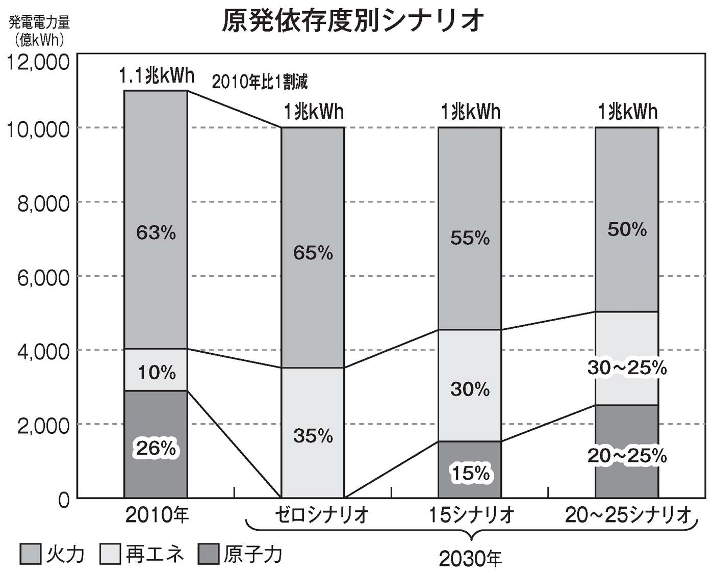
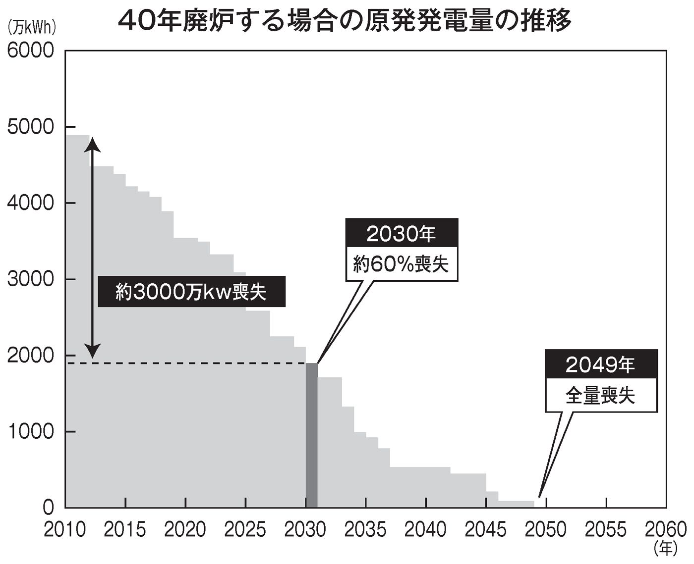
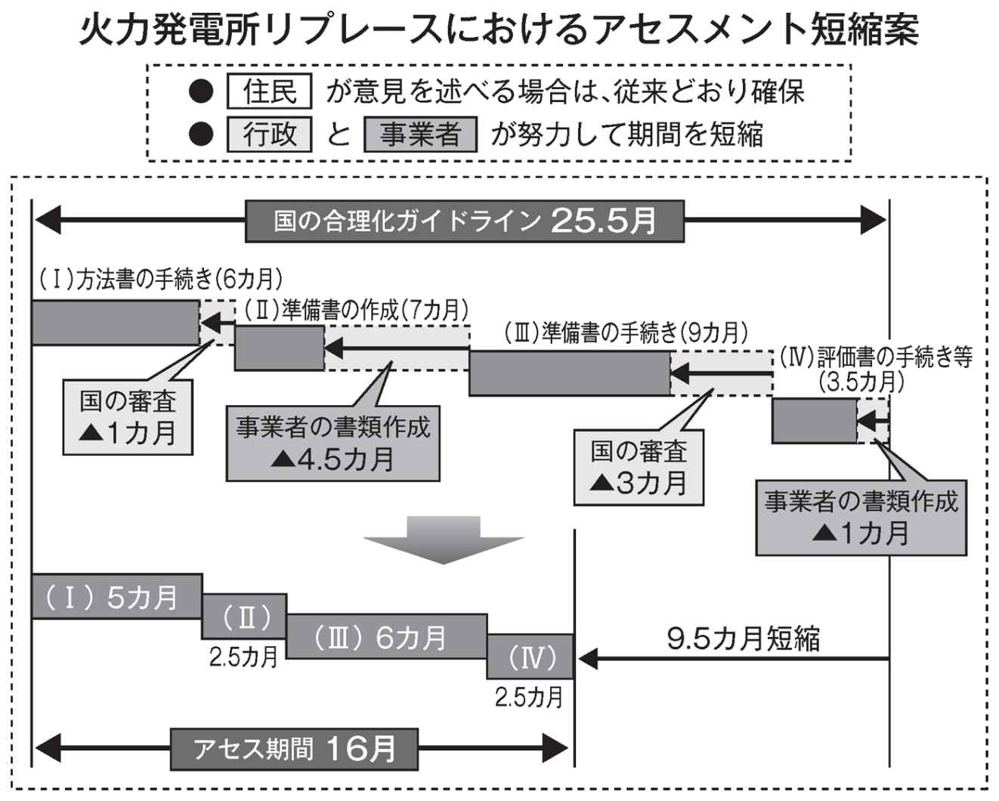
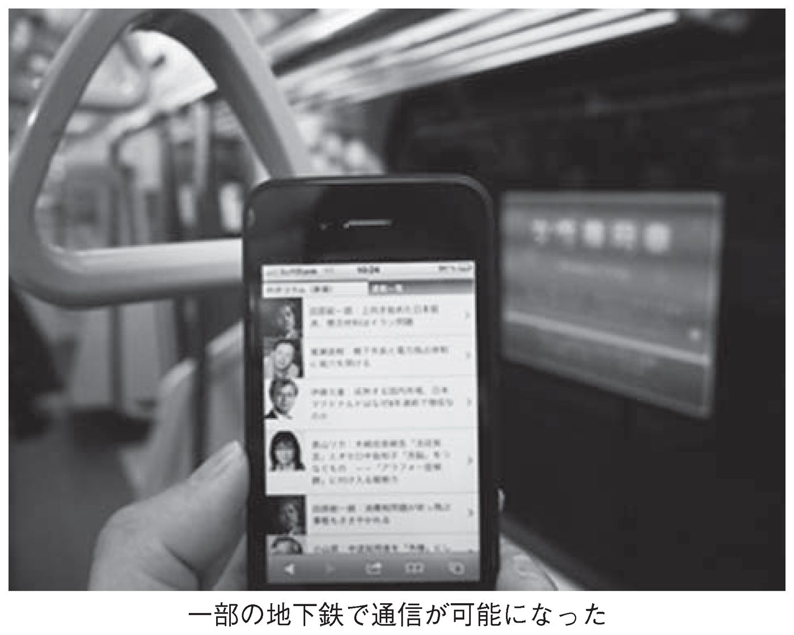

| 解決する力 (PHPビジネス新書) | |
| 猪瀬 直樹 | |
| PHP研究所 (2012) | |

解決する力
猪瀬直樹
はじめに
宇宙ステーションが軌道を周りながら映す地球は思わず見とれてしまうぐらい、青く澄んでいて魅惑的で美しい。
だが片側半分は太陽の光が届かない闇につつまれた夜の世界である。アフリカの砂漠やシベリアの凍土やアマゾンの森や氷に覆われた南極大陸は黒々としていても、ごく一部、大都市の部分だけは光の帯になっており、電力の供給はたしかに人々の活気をつくり出しているのだ。
世界の人口は十九世紀の初め、一〇億人ほどにすぎなかった。産業革命で化石燃料の大量消費が始まり、そのエネルギー獲得のための戦争の規模も拡大しはじめた。二十世紀になると人口が急速に膨らみ、第二次大戦の復興と植民地の自立など途上国の経済成長が人口爆発を引き起こした。一九六〇年には五〇億人、二〇〇〇年には六〇億人、二〇一〇年には七〇億人と増えつづけている。
そして世界の人口の半分が都市に集積するまでに至った。二十一世紀は都市の時代なのである。
先進国は途上国と違い、少子高齢化で人口減少社会へと転換しつつあるが、それでも大都市の人口はむしろ増えつづけている。
だから宇宙ステーションから見た夜の地球に不夜城の都市の輝きが増しているのだ。
類人猿からホモサピエンスに転換する際に、人類は火を発見した。近代社会では化石燃料を発掘し、原子力を発明して飛躍的な人口増加、都市型社会を実現したのである。もちろんさらに新しい火として、メガソーラーや風力発電など、太古から地球を温める光を供給して生命そのものを育んでくれた太陽と酸素を供給してくれる大気から自然再生エネルギーを得る時代が、やがてやってくるのだろう。
しかし、あの三月十一日の東日本大震災による巨大な津波と福島第一原発の事故はいまだに解決していない。自然再生エネルギーへの期待はあっても、原発が動かないまま、目前の電力供給は不安定であり、日本を代表する大都会・首都東京はエネルギー危機を迎えたままなのだ。
電力の安定供給は東京の都心の高層ビルも下町の中小零細企業や病院にとっても、一つひとつの家庭においても命綱である。本書で示したが、東京電力改革は課題解決の処方箋であり、決断の繰り返しで変えていく、つまり「解決する力」の一例である。
東京から国を変える、と石原慎太郎前知事は宣言して、十三年七カ月を前線で働いた。僕は作家石原慎太郎から副知事を依頼され、作家の発想力がすべてだ、協力してくれと頼まれて五年五カ月をともに過ごした。
困難な課題でも、発想力があれば乗り切れる。意志とは、できる、どうにかなるという楽観主義を前提として貫けるものなのだ。感性と責任感と集中力で自ずと「解決する力」が湧き出てくる。
霞が関の官僚機構の宿痾を分析した『日本国の研究』を読んだ小泉首相から道路公団改革を依頼され、そのプロセスは『道路の権力』『道路の決着』に記した。石原知事は『ペルソナ 三島由紀夫伝』『ピカレスク 太宰治伝』を読み、副知事をやれと言われ、『東京の副知事になってみたら』で改革の手始めを、『言葉の力』『地下鉄は誰のものか』『決断する力』でさらに説明責任を果たしているところだ。
石原さんは八十歳だが七十歳に見える。僕は五十歳くらいですかと訊かれる。同級会に行くと見た目五十歳から八十歳までいる。二十歳からの生き方の偏差はそのくらい大きな違いをつくる。意志のある生き方と漫然と流されるだけの生き方と、歳の取り方の結果は明らかに異なると思う。僕は六十五歳で東京マラソン初挑戦・初完走した。そのエピソードも「解決する力」の参考になればとの思いで記した。
年齢を重ねれば重ねるほど既知の領域が増えると同時に未知の領域も増える。好奇心はどんどん拡がり、どんどん深まる。悟りとはおそらく収束ではなく進化の進行の果てなのではないか。
首都東京は特別な都市である。日本の人口の一割、ＧＤＰ（国内総生産）の約二割をつくり出している。そして永田町や霞が関に直接、影響力を行使できる立場にある。逆に東京が衰退すれば日本が衰退する。東京が日本の命運を握っている。
宇宙船からは夜の電力の光が見えた。しかし、ほんとうの輝きは電力ではない。都庁職員や都議会議員の活動だけでもない。年齢を重ねた者が若い人へ知恵を伝え、また若い人が年齢を重ねた人へ新しい情報をもたらし、強者が弱者を扶け、金持ちが貧乏な人を、健常者が障害のある人を扶け、女性に働きやすい職場をつくり、結果、互いに助け合う東京が、電飾の光だけではない真の輝く東京をつくるのだと思う。
東京をほんとうの意味で輝く都市にしたい。人が輝く首都にしたい。そのために本書が少しでもお役に立てればと願うのである。
平成二十四（二〇一二）年霜月
西麻布の寓居にて 猪瀬直樹
解決する力───目次
国政の重しとなる「元老」が必要
現在、日本は毎年のように総理が交代する異常な事態が続いています。バブル崩壊以降、小泉政権の五年半を除けば、総理の在任期間は平均一年にすぎません。
この状況は、大正末期から日米開戦までの二十年間と酷似しています。大正十（一九二一）年に原敬が暗殺されてから昭和十六年まで、総理の平均在任期間はほとんど一年未満。この間、日本は破綻への道を突き進みました。
なぜ日本は破綻を回避できなかったのか？ その一因として、肥大化した官僚システムを制御できる「元老」がいなくなったことが挙げられます。
当時、山県有朋は大正十一年、西園寺公望は昭和十五年にそれぞれ亡くなった。維新や戦争を体験した彼らには、国家の大局的な指針を示す叡智があり、「官」を抑え込める力もありました。そうした人材がいなくなったことで、陸軍をはじめとする巨大な官僚システムが暴走を始めたのです。
現在の日本はどうか。肥大化・硬直化した霞が関は大震災や原発事故などの想定外の有事にまったく対処できない。政界では官僚出身や苦労知らずの二世、三世議員たちが跋扈している。外交は迷走し、あたかも羅針盤のない船が大洋に漕ぎだしているかのようです。
こんなときこそ、国政の重しとなる「元老」が必要です。戦前、敗戦、高度成長、そしてバブル崩壊に至る日本の近代の歴史を知悉し、大局的な判断ができる「元老」は、石原慎太郎しかいないのです。
太平洋戦争に終止符を打ったのは、昭和二十年四月に総理に就任した鈴木貫太郎でした。当時七十八歳の鈴木は、陸軍の抵抗を抑え、ポツダム宣言を受諾し、本土決戦という最悪の危機を回避した。
奇しくも石原氏は、当時の鈴木貫太郎と同年代です。石原氏には、官僚システムを改革し、バブル崩壊以降二十年間続く敗戦処理を終わらせなければならない歴史的使命があるのです。
十三年間にわたる官僚機構との戦い
石原都政の十三年間は、官僚機構との戦いでした。日本は国民主権を憲法に謳っていますが、実際には官僚主権。米国が五〇州からなる「ユナイテッド・ステイツ」なら、日本は一府一二省庁の「ユナイテッド・ミニストリーズ（省）」。復興予算の使途ひとつさえ、地方の末端まで霞が関が権限を掌握し、しかも各省庁がそれぞれ縦割り行政を敷いている。これでは国民目線の行政など不可能です。
石原氏は都知事に就任したときから、「東京から日本を変える」と一貫して主張してきました。
最初に取り組んだのは、ディーゼル車の排ガス規制。石原氏は率先して汚染防止に取り組み、それに引きずられるようにして国と業界も排ガス規制へと向かった。東京発の改革が、霞が関を動かしたのです。
次に取り組んだのは財政再建です。石原氏が当選した一九九九年当時、都は一〇〇〇億円を超える赤字に喘いでいました。そこで早急に財政再建推進プランを策定。包括外部監査を導入し、会計検査院より厳しい目線で、役所の無駄を徹底的に洗い出した。その結果、二〇〇六年には一三〇〇億円の黒字を達成。以後、都の財政は毎年黒字を計上している。巨額の赤字国債に喘ぐ国とは対照的です。
都知事三期目の二〇〇七年から、僕は副知事に就任しました。小泉政権で道路公団民営化等に取り組んだ実績が買われたわけですが、私に与えられた任務は「政府との折衝」「その他知事の特命事項に関すること」のたった二つ。しかし、この「その他」が肝で、知事の特命を受けてさまざまな改革プロジェクトを立ち上げました。
僕が意識したのは、縦割り組職に横串を刺すようなプロジェクトチームをつくることでした。縦割り組織は「前例」「ルール」に束縛されているため、想定外の問題に対処できない。だが、組織横断的にメンバーが集まれば、与えられた守備範囲を超えた発想や解決策が出てくるのです。
縦割りの弊害の典型例が、東京の地下鉄です。東京メトロと都営地下鉄は同じ都心を走っているのに、運賃体系が異なり、乗り換えも不便で、利用者目線の経営をしていない。それを解決するには、両者を経営統合するしかない。しかし、国交省と東京メトロは一元化に頑強に抵抗しています。その背景には、東京メトロが利益を子会社群や優良不動産に溜め込み、そこが官僚の利権と化している事実がある。そこにメスを入れない限り、真の改革はありません。
東京電力も同じです。福島原発事故以来、都は東電の筆頭株主かつ大口契約者として、東電の経営実態の把握に努めてきました。僕が精査したところ、東電はずさんな需要予測をもとに過大な料金請求をしていた。また、無数の子会社・関連会社群に利益が溜め込まれ、そこが天下りの温床となっている。まさに「官」と同じ構図です。
橋下氏にない国家観を補完する
こうした「地方からの改革」のパートナーとして石原氏が選んだのは、橋下徹・大阪府知事（当時）でした。橋下氏とは「官僚システムの打破」という点で理念が一致します。電力改革では、同じく関西電力と闘う橋下氏と連携しました。
石原氏と橋下氏は、理念が一致するだけではなく、お互い足りない部分を補完し合う関係にもあります。前述した通り、石原氏は高齢ではあるものの、「元老」としての叡智がある。一方、橋下氏は若く突破力があるが、国家観や歴史観、外交では心もとない。志を同じくする二人が補完しあえば、怖いものなしです。
このように考えてみると、石原新党と日本維新の会が、大きな枠組みのなかで連携するのは当然な流れです。実際、二〇一二年十月十三日に二人が都内のホテルで会談したと報じられましたが、知事辞任直前にも会談し、今後の方向性を詰めています。
橋下氏は市長に就任したばかりで、大阪都の区割り案など、大きな課題がまだ残されている。これを放り出して次の総選挙に出馬するのは実質的に困難です。そうした状況下、石原氏のような大局を判断できる指南役がついていれば、「維新の会」も生きてくる。
それでは「石原・橋下連合」は何を目指すのか？ 次回総選挙で自民党が第一党になるのは、間違いない。しかし、自民と民主がチキンレースをする現状は変わらないだろう。つまり、自民党が政権与党に復帰しても、官僚主導政治からの脱却は絶望的です。
それならば、既存の縦割り政治に横から活を入れる大きな連合体を結集すればいい。地方の仲間と連携し、官僚支配と戦おう......二人はそう考えているのです。
明治維新は、幕末の志士たちの「横議横行」から始まりました。改革者が脱藩して組織横断的に議論し、横のネットワークをつくり上げた。摩も長州も一度は戦争しましたが、最後は倒幕のために、大連合を結成した。その結果、江戸時代は三〇〇の藩に縦割りされていた日本は、近代国家に生まれ変わりました。
もちろん、原発政策などで多少の違いはあります。しかし、数十年単位の長期的な視点で見れば、政策的な違いはほとんどない。大義のために小異は捨てる覚悟は、両者ともできている。
東京と大阪から始まった脱・官僚システムの動きが国政の舞台にまで広がることを期待するとともに、石原氏が着手した都政改革が今後も続くことを願っています。
（『週刊文春』二〇一二年十一月八日号）
東京都は株主総会で社外取締役の就任を要請
東京電力の「定款」を読んだ人は株主以外にはほとんどいないと思われる。僕も電力改革を始めるまではまったく読む機会がなかった。
「定款」は「株式会社」の憲法である。まことにもって奇妙奇天烈、不思議な世界が東京電力の「定款」では展開されているのだ。
たった九ページの小冊子に、第一条から第四〇条まで記されている。
第一条は、東京電力は英文ではThe Tokyo Erectric Power Company, Incorporated.と表示する、とどうでもよいことから始まり、第二条に「本会社は、次の事業を営むことを目的とする」と、いよいよだなと思ったら、「一、電気事業」、あっさりわずか四文字で記されている。あたりまえすぎると思いきや、しかしそこからが狂っている。
「二、電機機械器具の製造及び販売」は関連だから、まあよい、「七、電気通信事業、放送業、情報処理・情報提供サービス業及び広告業」と少し怪しくなりはじめ、「八、不動産の売買、賃貸借及び管理並びに倉庫業」で、だんだんハミ出してきて、「一〇、宿泊施設及びスポーツ施設の経営」と、いったい電気と何の関係があるんだい、何をやっているんだとなり、「一一、介護サービス事業及び労働者派遣事業」「一二、金銭の貸付、債券の売買その他の金融業」「一三、損害保険業及び損害保険代理業」と逸脱しつづけ、最後の「一六、前各号に附帯関連する事業」、何でもありで会社の「目的」が閉じられているのだ。
社員の福利厚生施設である保養所やレストランなどを経営する地下鉄六本木駅徒歩二分の東電の連結子会社・東京リビングサービスなど、子会社の実態についてはすでに僕はあちらこちらで書いたりテレビに出演して説明したりしてきた。ホテルも釣り堀も温泉もあらゆる業種に手を出している。五兆円の売上高の一割、五〇〇〇億円を子会社で稼げ、というのが東電の経営方針だった。
有価証券報告書には連結子会社は四〇社しか記載されておらず、最後の隅っこに「その他、一二八社」と記されていた。その他？ 会社の名前もわからない。そこで四〇社＋一二八社で合計一六八社の東電からの「天下り」リストを示せ、と迫った。
こうして、連結子会社の役員四八〇人のうち一七〇人が東電ＯＢ及び東電出向者で占められていることがわかった。子会社役員の平均年収は一〇八五万円だった。
東電から子会社への発注は、当然、お手盛りの随意契約である。競争入札にすれば三割はコスト削減できるのにそんなことはお構いなしの高値で発注してきたのだ。これらは地域独占の電力会社特有の総括原価方式と呼ばれ、全部が我々の電気代に反映されているのである。
東電の憲法「定款」の異常さについての話である。
第三条は「本店は東京都千代田区に置く」とこれまたどうでもよい。第四条は「株主総会及び取締役のほか次の機関を置く」として、「取締役会」「監査役」「監査役会」「会計監査法人」。あたりまえだ。第五条は「本会社の公告方法は、電子公告とする」とは要するにホームページがあります、というだけのこと。
ここまでに理念めいた記述はいっさい記されていない。第六条以降「第二章 株式」で「発行可能株式総数」など事務的で、条項、無味乾燥の記述がだらだらと続く。
僕は二〇一二年四月二十七日に新宿の都庁舎で記者会見をした。六月二十七日の株主総会に提出する議案に「定款の一部変更の件」を入れた。
「第六条 本会社は、社内における競争原理の導入等により、低廉かつ安定的な電力を供給し、顧客サービス第一を使命とする」
東京都の「株主提案」を発表するにあたり、「経営理念」の定めがないことに驚いたから、新しく第六条として示したのだ。西澤俊夫社長の「値上げは権利」の主張は顧客無視の意識が社内に蔓延している結果である。「宿泊施設及びスポーツ施設の経営」など、電気事業以外の不要な目的を整理することと合わせて、定款に新しい思想を吹き込まなければいけない。
盟友・樫谷隆夫氏
そして六月二十七日、東電株主総会が開かれた。二〇一一年は芝公園のザ・プリンスパークタワー東京の地下の会場だった。六〇〇〇人のキャパシティーなのに株主が九三〇〇人も押しかけ、入りきれず三〇〇〇人が廊下や建物外部にあふれた。したがって今回の会場は一万人収容の代々木体育館に決まった。
ただし株主総会は反原発・脱原発の意見を述べるための人たちが多数集まり、えんえんと質疑応答が五、六時間続くガス抜き大会の様相を帯びる。
東京都は筆頭株主だが、わずか二・七パーセントで過半数の議決権に遠く及ばない。意見を述べるだけの自己満足では意味がないから、今回は実質的に中身を先取りする作戦に出たのである。
四月二十七日の株主提案で東京電力の「定款」に、すでに示したような「経営理念」を提案すると同時に、最も重要な議案として、以下の一文を入れた。
「企業再生やコンサルティングに豊富な経験を有する専門家を社外取締役に選任する」
株主総会はかたちばかりのもので、実際には政府の原子力損害賠償支援機構と東京電力の綱引きで人事が決まる。こうして四月二十七日に東京都推薦の公認会計士を社外取締役に入れろと原賠機構と交渉し、五月十一日金曜日に内定を得た。
僕の盟友・樫谷隆夫氏と並び、記者会見に臨んだのは五月十四日月曜日であった。彼は静かに力強く言った。
「実務的にやります」
樫谷氏とはどういう人物か。
二〇〇一年四月に小泉純一郎首相が誕生したとき、僕は道路公団民営化のプランを提出した。その際、樫谷氏と二人で旧日本道路公団の経営の分析をした。公団は民間企業と違って特殊な会計方式なので、借金は正確にいくらなのか、どうやって返済したらよいのか、答えを見つけなければいけない。そのとき樫谷氏が貸借対照表を見つめて、「キャッシュフローが七〇〇〇億円もあるじゃないか」と利益隠しに気づいた。ふつうの会社なら借金は利益から支払う。ところが道路公団は返済が費用項目に分類されていたのである。
「なるほど」
僕は思わず、膝を叩いた。その瞬間、借金が三〇兆円あれど経営再建が可能、民営化の見通しが立ったからだ。
樫谷氏は少しふっくらとした面立ちで朴訥なしゃべり方、きわめて謙虚で遠慮がちにぽつりぽつりと言う。
二〇一二年の三月、樫谷氏の黄綬褒章受賞記念パーティが開かれた。乾杯前の挨拶は僕とユニクロの柳井正氏という異例の組み合わせであった。
あの多忙な柳井氏と樫谷氏の接点は二十数年前に遡る。
ユニクロがまだローカル企業で五、六店ぐらいでしかなかったころ、柳井氏は広島銀行宇部支店長に融資をお願いしに行った。
「担保がありませんね」
ニベもなく断られた。柳井氏は会計資料を束ね上京した。『熱闘「株式公開」』の著者、一面識もない樫谷氏を訪ねるためである。帳簿を見た樫谷氏の判断は速かった。
「大丈夫です」
担保はないがキャッシュフローは十分にあり強気の店舗展開が可能、よって広島証券取引所に上場して資金を集めればよい。以後、地方展開で力を蓄えたユニクロはメジャー化、知らぬ人はいない有名会社になった。さらに最近の世界展開は知られている通りである。
樫谷氏は六月二十七日の東京電力株主総会で正式に社外取締役に就任した。日本の電力改革は一歩ずつ確実に進む。
（『一個人』二〇一二年八月号）
東電株主総会で与えられた席は一人分だけ
テレビでさんざんご覧になった記憶があるかもしれないが、僕は二〇一二年六月二十七日に行われた東電株主総会に出席した。テレビでは見られなかった裏話を、ここに記しておこう。
国立代々木体育館は、一九六四年の東京オリンピックに間に合わせるためにつくられた丹下健三設計の印象的な建築物で、屋根が飾北斎の波浪のように稜線を大きくうねらせている。晴れた日だった。記憶のなかの黒い津波と対照的に、その屋根が眩しく輝いて空々しい。
東電自身、そんな一万人も収容できる巨大な建物で株主総会を開くなど、想像したこともなかっただろう。三・一一の福島第一原発事故によって日本で最も安定していると思われていた東電株は紙切れ同然、老後の暮らしを設計していた人たちはまるまる一財産を失ったのだ。さらに無念なのは、原発事故で人生の前途を、未来そのものを奪われた人々である。
株主総会が近づいたある日、東電側から都庁へ使者が来た。こちらは二・七パーセントの筆頭株主であるからして少しぐらい優遇されてもよいはずだと応じたら、どうもそうではない。やっぱり東電は殿様なのであった。
「五人ぐらい、座席を確保してくれるんだろうな」
「いえ、副知事、お一人です」
「一人？ 筆頭株主だよ」
「そういう決まりです」
「でも一万人も来たら、いろいろな人がいるから危ないじゃないか」
「大丈夫です。わたしが身体を張りますから」
体育会系のその男は胸を張って言った。
僕は冗談めいた口調だが、半ば本気で不満を述べた。
「身体を張るって？ 僕の命を東電社員のあなたに任せろって？」
信用できるもんか。僕のツイッターまで監視している東電は、よくこれまでウソをついてきたのだよ。一万人もいたら、大勢のなかには脳ミソに電波の走っている人だっているわけだよ。言っても無駄だ。自ら対策を講じないといけない。
大阪市は関西電力の筆頭株主だが、橋下市長もやはり「一人だけです」と言われた。さすがに大阪府警としては警備上、問題ありと判断して私服の警察官を会場に配置した。テレビ映像でおわかりの通り、橋下市長は二階席の端っこ、警備上最も安全な場所で質問している。その横にＳＰが二人、険しい眼であたりを窺っていた。
東電社員に向かって言った。
「一〇〇株でも、二・七パーセントの筆頭株主でも同じ待遇なのかね」
「そうです。規則です。特別な待遇はできません」
東電社員は、当然である、という顔をした。株主総会を仕切るのは東電であり、「私的自治」の世界であるから自分たちの理屈に従えと。「値上げは権利である」と平気で言ってしまう会社なのだ。公益のため僕は発言するのだが、関係ありませんとニベもない。
そうかね、そうかね、考えた末に思いついた。一〇〇株あれば、一枚の入場券が手に入る。それはそれで平等なのだから探せばよい。僕の事務所で非常勤で経理を担当している女性が、一〇〇株持っていると知った。一〇〇株ぐらい、身近にいるものだね。
「バブルのときに買ったんです。一〇〇株で八〇万円ぐらい。でも事故前ですでに三〇万円ほどに下がっていて、事故後のいま二〇〇円ぐらいなのでわずか二万円の価値かしら」
「それは大損だねえ」
東京都が提案しているのは意識改革や経営透明性の確保や設備投資への競争原理導入など、六号議案、七号議案、八号議案、九号議案である。往復ハガキの記入欄に○印をして出すんだよ、と僕はくどいほど彼女に説明しておいたのだった。しまった、である。
「もう○印をつけて投函しました」
慌てたが、一〇〇株ぐらいなら、どこにでもいる。すぐに都庁職員で三人見つかった。これで警護については少しほっとした。
株主提案は前に説明したが、公認会計士の樫谷隆夫氏が取締役に入ることはすでに内定済みなので、その件は取り下げた。残り六～九号議案は定款の変更だから三分の二を押さえなければならない。事前に一〇万株以上の株主四〇〇法人へ向け、賛同してほしい旨の通知を出した。これが全部賛成しても四七パーセント、残り五三パーセントは個人情報の問題もあるから都庁ＨＰで賛同を訴えた。三分の二はどだい無理である（結果的に「顧客サービス第一を使命とする」六号議案は二一パーセントの賛成を得た）。
東電病院という隠し玉
株主総会は、その日までが勝負と、その日のみの勝負と、二つある。株主提案は八週間前に締め切りで、東京都は二〇一二年四月二十七日に提出した。二・七パーセントでは権利がないが、この半年かけて子会社の実態を解析して、その都度、無駄を指摘してきたことで、公認会計士の樫谷隆夫氏の社外取締役を認めさせたのが五月十四日だった。さらに、「定時株主総会ご通知」（六月六日配付）で残り四議案についても定款に盛り込むことは「なじまない」としているが内容的にはある程度は受け止められている。「平成23年度報告書」（当日配付）でも同様である。
「その日までが勝負」とは、提案者が世論をつくり、この「ご通知」「報告書」により多く深く反映させること。株主総会の最初の二時間は、動議が出たり、野次怒号の嵐であっても、たんたんと事務的に進められるのだ。東京都の四議案も、反原発などの六議案も、あらかじめ用意された答えがあり、提案者が問題提起すると当局側が「意見表明」を読み上げる儀式なのだ。
「その日のみの勝負」とは、「質疑応答」の時間である。質問内容は伏せられているのでサプライズがあり、当局側の答弁もアドリブになる。質問者としては、そこが狙い目なのだ。
僕は東電病院を隠し玉として用意した。二・七パーセントでは株主としては弱い。東京でも大阪でも、その他の都市でも自治体は電力会社の「私的自治」に食い込むことは難しい。しかし、東電が病院を経営していて、しかも一一三の病床があって稼働率は二割以下、社員やＯＢしか診療せず一般人は門前払い、という事実については立ち入り検査権限がある。医療法に基づいて都道府県がチェックすることになっている。
株主総会の前日、東京都は東電病院に立ち入り検査した。二〇床程度しか稼働していない。三年前は一九二床だったが稼働率が低いとして一一三にした。全然反省していない。東電の資産売却リストには不動産や保養所やグランドなど各地の物件が並んでいるが、なぜか東電病院は入っていなかった。理由は、福島への医療支援。では、福島への医療支援の実態はどうか。立ち入り検査でわかったのは、土日に医師が一人行っているだけという事実。東電は白昼堂々とウソをついていたのだ。
ＮＴＴ病院でも東芝病院でも、会社の名前がついていてもみな一般人を診療対象としている。満床にしなければ赤字経営になるから。東電病院は稼働率が二〇パーセント以下、東電本体が赤字を補填すると、我々の電気料金に反映されるのだ。しかも公的資金一兆円が注入されるにもかかわらず。
テレビでご覧になったと思う。東電側はしどろもどろの答弁となり、東電の経営体質を改めざるを得ない方向が明確になった。その後、新役員（外部七名、プロパー四名）による取締役会で東電病院は廃止が検討されることが決まったのである。
（『一個人』二〇一二年九月号）
一一三床のうち約二〇床しか稼動していない東電病院
二〇一二年六月二十七日に開催された東京電力の株主総会に出席した。東電はまだ多くの負の遺産を抱えているが、そのなかから東京電力病院（東京・新宿）と「社友」制度の問題を指摘した。東電の古い体質を一掃しなければならない。
午前十時から国立代々木競技場第一体育館で開かれた総会に出席した。株主提案はあらかじめ質問がわかっているのでいわゆる「答弁」である。質疑はアドリブなので、隠し球を用意したのだ。それが前述した東電病院である。
一九五一年に開設された「東京電力病院」という病院がある。これは先に触れたように東電社員やＯＢだけを診療する企業立の「職域病院」だ。現在、病院のベッド数は一一三床許可されているが、東京都の立ち入り検査の結果、約二〇床しか稼働していない。一般開放されていないために、稼働率が落ち続けているのだ。現在、一般開放していない職域病院は東電病院以外に存在しない。
東電は再生プランの一環として不動産を売却していくことになっているが、不動産売却リストにはこの東電病院は入っていない。公的資金を投入され、ゼロからの再出発を余儀なくされている東電が、独自の社員だけの病院を保有しつづけていていいのか。
東電病院は新宿区信濃町にあり、東京都の試算では不動産評価額は一二二億円である。
ウソの答弁をする東電副社長
一般質疑で僕は不動産売却リストに東電病院がなぜ入っていないのかと問い詰めた。
猪瀬 東電はいま公的資金が入ろうとしている。このときにこの病院をまだ東電からお金を投入して運営しつづけるとしたら、とんでもないことだ。売却資産リストになぜ、これを入れなかったのか。
こんな病院があること自体が、意識改革がなっていないということなのです。東電病院は直ちに売却するなり、処分の仕方を示していただきたい。
山崎雅男副社長 なぜ、これが売却対象にならなかったのか、ということでございますが、震災以降、福島原子力復旧作業に対する医療支援に取り組むために、医者が現地に赴きまして、いろいろな作業をする人たちの医療を行っております。そういうことがございまして、総合特別事業計画のなかでは、当面は継続保有ということになっております。
山崎副社長はウソを言っている。たしかに総合特別事業計画には「医師・看護師が福島に派遣されており、被災地への配慮を考慮すれば当面売却すべきでない」とあるが、実態が反映されていない。
一般開放は「都から難しいと言われた」というのもウソ
すかさず僕は立ち上がり再質問した。
猪瀬 いま、おっしゃった回答は、福島の医療業務に従事しているから、という言い方をしている。しかし、福島には医師が土日に一人行っているだけです。いいですか、東京都は立ち入り検査をして、実態を確認しているんですよ。
勝俣恒久会長 ただいまのご質問に私からお答えいたします。東電病院はこの一年あまり、おっしゃったように、土日一人ですが、福島の医療体制が整う間には、看護師さんを含めて派遣していました。今後、ご指摘の面も含めまして、福島のほうの医療体制も整ってまいりますので、どういうふうに整理するか、検討課題と早急にさせていただきたいと思います。
東電病院の売却について、勝俣会長はこのように引き取ったが、山崎副社長のウソは他にもあった。
答弁のなかで、山崎雅男副社長は「私ども、何度か一般開放はできないだろうかということを検討いたしましたが、新宿区には大きな病院がいくつもございまして、じつは都のほうからも、それは難しいと言われてきている実態にございます」と、あたかも東京都が一般開放（一般病院への移行）は難しいと指導したように発言している。これはまったくの事実誤認だ。
勝俣会長は「古い東電の象徴」だ
東電は二〇〇七年二月、労務人事部副部長が来庁して一般開放の相談をしている。当時東京都の医療安全課長は、企業立病院ではなく医療法人化などの条件をクリアすれば一般開放は可能とアドバイスした。しかしその後、東電からの相談は途絶え、東電病院は一般開放されず、今日に至ったというのが真相である。
東電のやる気がなかったから一般開放されなかっただけなのに、それを東京都に責任転嫁するのだから、東電の体質はとことん腐っている。このように東電病院の問題にも東電の殿様体質がよく表れている。
そこでもう一つ言っておかなければならない問題があった。勝俣会長の退任後の処遇である。勝俣会長は「古い東電の象徴」だからだ。
勝俣会長は株主総会後の取締役会で退任し、六月二十九日に日本原子力発電の非常勤社外取締役に就任（再任）することが決まっていた。さらに、東電内で「社友」という立場になることも決まっていた。この社友には部屋や車が会社から提供される。
新しく東電が生まれ変わるときに、勝俣会長のような人物が、たとえそれが社友というかたちであっても、東電と関係を持ち続けることは好ましくない。古い体質をなくして東電が生まれ変わるためにも、勝俣会長をはじめとする旧経営陣は東電との関係をいっさい断ち切らなければいけないのだ。
猪瀬 東電は樫谷隆夫氏などの人材が会社の外から取締役会に入って、新しいガバナンスに切り替わる。東電の再生を考えるならば、旧経営陣であり、カリスマ性、影響力のある勝俣さんが身を退かなければならない。
勝俣会長 まず日本原子力発電につきましては、本年についても同社より再任の依頼があり、引き受けさせていただくことにいたしたものであります。
次に社友について、お答え申し上げます。社友はいわゆる役職位ではなく、あくまで名誉的称号という位置づけで、当社経営に携わった会長、社長経験者に付与しうるものでございますが、経営に関しては、私を含めまして、たとえば、新体制に全面的に依頼し、ノータッチ、こういうことでございます。ご了解いただければと思います。
社友問題については僕が指摘した直後に進展があった。株主総会が終わったその日の夜、新しい取締役による取締役会が開かれ、そこで社友制度の凍結が決定されることとなったのである。
東電の新しい取締役会は、全構成員一一人のうち七人が外部の人間となった。さらに社内に、東電の若手社員などを中心とした「経営改革本部」が設置される。
経営改革本部と東京都は定期会合を持つことになっている。東電の負の遺産を完全に取り除くべく、定期会合の場などを通じて今後も改革を求めていく。
（「日経ＢＰネット」二〇一二年七月三日）
東電、東京都との会合で東電病院売却を表明
東京電力経営改革本部（本部長：下河辺和彦会長）と東京都の第一回定期会合を開き、東京電力病院の売却を決めた。東電は抽象的な改革計画ではなく、子会社のリストラについて具体的なアクションプランを示すべき、と提案した。
二〇一二年十月一日、東電経営改革本部と東京都の第一回定期会合を東京都庁で開いた。東電の構造改革を後押しするため、東電経営改革本部との定期会合を持つことにしたのである。出席したのは東電の新経営陣として常務執行役の村松衛氏、原子力損害賠償支援機構から取締役に就任した嶋田隆氏である。二人は経営改革本部の共同事務局長を務めている。
今回の会合では、東電病院の売却が決定された。先に書いたように、一九五一年に開設された東京電力病院は企業立の「職域病院」で、東京都の立ち入り検査の結果、稼働率が落ち続けていることが判明した。
東電は再生プランの一環として不動産を売却していくことになっているが、不動産売却リストにはこの東電病院が入っていなかった。東日本大震災以降、福島原子力復旧作業に対する医療支援に取り組むために、東電病院の医者が現地に赴いているとして、売却リストから省かれてきたのである。
破産し、公的資金を投入されている東電が、このような病院を保有しつづけるのはおかしい。
そこで六月二十七日に開催された東電の株主総会で、僕は東電病院の売却を提案した。東電の勝俣会長（当時）は検討するという言い方にとどめてきたが、今回、東電の職員しか受診できない東電病院は「売却する」と明確な表現に決まった。翌二日各紙でも報道されたように、二〇一二年度中に競争入札を実施して、二〇一三年度以降に売却する考えが東電側から示されたのである。
東電病院売却の他にも、今回の会合では、子会社に対する削減のアクションプランをもっと具体化するよう東電側に求めた。もちろん経営改革本部で改革の計画をつくってきてはいるのだが、大まかすぎて具体性に欠ける。リストラを断行するには、各論で具体的な数値を詰めていかなければならない。
たとえば東電の電柱が立っている用地を管理する東電用地という会社がある。日本全国には電力会社の二二〇〇万本の電柱があり、東電管内だけだと五八〇万本になる。電力会社は土地を借りて電柱を設置している。そういう電柱用地の管理を行っている東電の連結子会社が、東電用地である。
高度成長期に電柱数はうなぎ上りに増えたが、現在は横ばいだ。むしろ、地中化などによって電柱数は減る傾向にある。そんななか、東電用地の売上高は三割減っている（二〇〇九年度一二四億円→二〇一一年度九〇億円）。
リストラの進め方がふつうと逆ではないか
売上高が減れば、人件費も下がるのがあたりまえだが、東電用地の社員数は一割しか減っていない。二〇〇九年度末の八〇八人に対して二〇一一年度末で七〇四人である。一方、東電用地の委託員数（非正規雇用）は四割も減っている。二〇〇九年度末に五四九人だったのが、二〇一一年度末には三三四人になっているのだ。
景気変動に伴う一時的な人員調整なら、非正規雇用から削減することも十分にあり得る。しかし、根本的にリストラを実施する場合には、固定費削減のために正社員を中心に人員を削減していくのが常道だ。
東京都交通局は二〇〇三年からリストラを進めてきたが、人件費削減のために、運転手の人員を「はとバス」への委託に切り替え一八％削減した。固定費削減のために、アウトソーシングを推進してきたのである。
破産していない事業体でも、リストラでは固定費を徹底的に削減する。まして、破産した東電はより徹底したリストラを進めるべきなのに、ふつうとはまったく逆のことをやっている。
かりに二〇一三年四月に柏崎刈羽原発が再稼働しないとしたら、東電グループ全体で人件費をもっと削らなければならなくなる。東電は各子会社の現状を踏まえ、具体的な削減目標などを明記したアクションプランを出すべきだ。
東電のなかの経営改革本部というのは、東電の社員に囲まれて改革をしなければならない立場に置かれている。
当然、社内からの抵抗は強いので、思い切った改革を進めることが難しい場合も出てくるだろう。定期会合などを通して、東京都が改革を後押しすることで、改革本部が動きやすくなる。そういう関係を継続していくことが重要と言える。
これまでやってきたことを根本的に改め、会社がすぐに変わるということは簡単ではない。だからこそ、東電が変わるために東京都は役割を果たさなければいけない。原則として月一回くらいのペースで定期会合を開き、東電の改革の進捗状況を見極め、提案し、改革が遅ければ早くしろと伝える。改革本部自身も社内でがんばれるように、東京都が強力な後ろ盾となる。それが東京都の役割だと思う。
東京都は一〇〇万キロワットのユーザーで年間五〇〇億円の電気料金を支払っている。また東京都は首都圏の中小企業の代弁者でもある。さらに東京都は東電の主要株主でもあり、東電改革には大きな責任を負っている。今後も、責任ある立場として、東電と話し合いながら改革を推し進めていく。
（「日経ＢＰネット」二〇一二年十月十日）
東日本大震災がもたらした二つの教訓
「たった六ヘクタールで川崎天然ガス発電所は八〇万キロワットですよ。この都庁ビルの裏にある新宿中央公園の九ヘクタールよりも敷地が狭いんですから」
「そうか」
「福島第一原発の敷地は三五〇ヘクタールもありますからね」
「ずいぶん違うなあ。六ヘクタールぐらいなら東京に埋め立て地はいくらでもあるからな」
石原慎太郎知事（当時）は頷きながらソファに腰を下ろし、身を乗り出した。
僕自身、発電所をつくる話に真剣味を帯びて説明する自分が不思議だった。発電所をつくるために僕は副知事になったのか？
福島第一・第二原発で九〇〇万キロワットが喪失した。新潟の柏崎刈羽原発は八〇〇万キロワットである。柏崎刈羽の原発でも定期点検中の原子炉が再開されず、稼働中のものが十三カ月後に定期点検に入ると、夏の電力供給はかなり不確かなものになる。
企業は電力供給が保証されなければ中期計画が立てられず、設備投資も控え、海外へ出ていくしかない。産業の空洞化が起き、国内の雇用も失われる。
「一〇〇万キロワットの発電所をつくったって足りないくらいですよ」
「じゃあ、二〇〇万でいこうか」
素直に面白がるところが作家としての石原さんの一つの側面であり、そのあたりで僕がうっかり油断したせいで副知事という職務に就いたのだった。
西新宿の都庁第一本庁舎七階の知事室はふつうのフロアより天井が二倍近く高い。長方形の部屋の一隅にソファがあり、別の一隅には一〇脚ほどの椅子が置かれた会議テーブルがある。
二〇一一年三月十一日午後二時四十六分、都議会閉会日で議会棟から引き揚げて来て知事室の会議テーブルに坐ったところでギシギシ、ギシギシと知事室の壁が奇妙な音を立てはじめた。真冬の強風が荒れ狂った日にも柱のあたりがギシギシと鳴り、高層ビルとは変な構造物なんだなと感心したのか呆れたのか、石原さんと笑い合った記憶がある。だから、またかと僕は思った。そのうちに横揺れが激しくなりはじめた。
「テーブルの下に入ろうや」
長身の石原知事が腰をかがめて机の下に頭を突っ込むので、僕もかくれんぼうの仲間に加わった。数人の幹部職員はまだ立って身構えている。三十秒もすると机の下にいてもあまり意味がないというかバカバカしいので、石原知事と顔を見合わせ、なんだかなあ、と苦笑いして椅子に坐り直した。
まだ揺れている。揺れはさらに激しくなった。ただごとではないと悟るまで少し間があった。
東日本大震災は二つの教訓をもたらした。一つは巨大な津波という自然の猛威である。日本列島の記憶のなかには織り込まれていたはずなのに、人間のほうは記憶喪失に陥っていたかのごとくであった。もう一つは、監督官庁と地域独占企業が原発という〝毒〟を管理するにはあまりにも杜撰な企業統治（ガバナンス）の下で、のうのうとただ利益を貪っていたにすぎない事実だった。
ガレキのなかの復旧・復興、放射能汚染の対処など課題が山積しているが、まずは原発に代わる電力を供給しなければ日本中に失業者があふれてしまう。そうなれば税収も減り復興の原資も消えてしまう。東京電力管内では原発の電源は三割だったが、関西電力管内では五割近い。地域独占の九電力会社以外にも工場などでの自家発電があり、供給には潜在力があるとしても、原発が稼働しない事態を想定すると、専門家と緻密な計算をしてみたが電力は絶対的に不足する。
メガソーラーを推進しているソフトバンクの孫正義さんとも、この原稿を執筆する数日前に電話で話したが、基本は天然ガス火力発電だと思っている、メガソーラーはピーク時の電源確保が目的だと明言した。
三・一一以降、僕は都庁内に発電所設置のプロジェクトを立ち上げた。あらゆる偏見を排し、虚心坦懐に、我々の生活と産業の根本に入り込んでいる電力にどう対処したらよいのか。
コストが安く、発電効率の高い天然ガス発電所
八丈島の地熱発電所も視察した。八丈島の地熱発電は三三〇〇キロワットと小規模で、残り八〇〇〇キロワットはディーゼルエンジンによる発電である。地熱発電は日本で一三カ所、総発電量は五〇万キロワット。海外でもアイスランドやフィリピンの例があり、世界の発電機シェアは富士電機、三菱重工、東芝で七割近いが、絶対量が少ない。風力発電と同様で将来有望という評価はあっても中心にはならない。
群馬県の水上温泉の奥にある揚水発電所にも行ってみた。水力発電は基本的に規模が小さい。だがこの揚水発電所は一二〇万キロワットだという。だいたい揚水発電という言葉が耳新しい。『黒部の太陽』（三船敏郎・石原裕次郎主演）という映画があり、黒部ダムは観光名所になった。ＮＨＫの『プロジェクトＸ』でも難工事の様子が証言とともに克明に語られ、歌手の中島みゆきが二〇〇二年の大晦日の『紅白歌合戦』で『地上の星』をトンネル内から生中継で歌った。その黒部ダムの発電量はわずか三三・五万キロワットなのである。
黒部ダムは東京オリンピック前年の一九六三年に竣工した。僕が訪れた群馬県の玉原揚水発電所は一九八二年に完成した。二十年の差のなかに秘密が隠されている。利根川の支流の一つに藤原ダムというありふれたダムがあった。そこから五〇〇メートル高い場所にあとから玉原ダムがつくられる。夜間電力で下の藤原ダムに貯まった水を玉原ダムに持ち上げる、揚水とはそういう意味である。昼間のピーク時電力が不足してブラックアウトの危機が迫ったら、玉原ダムの水を落下させ発電する。原発はつねに一定の電力を生産するので夜間電力が余る。そうなのだ。黒部ダムに代表される水力から原発の時代へ転換したとき揚水発電が隠れ電源として誕生していたのである。福島の事故がなければ、揚水発電所の存在など気づかなかっただろう。
冒頭の場面に戻ろう。
僕は黒部ダムから玉原ダムへ、という水力発電の意味の転換について石原知事に話した。
「驚いたのですが、玉原揚水発電所の工事費は二〇〇〇億円でした。いまから三十年前にその価格ですからね」
「すると川崎天然ガス発電所はいくらなのかね」
「一基四〇万キロワットで二五〇億円、二基八〇万キロワットで五〇〇億円あまりです。十年前の価格ですからいまはもう少し高いかな。それでも原発の一〇分の一以下ですね」
川崎天然ガス発電所は、非東電系である。通常の火力の発電効率は四〇パーセントほどだが、六〇パーセント近い。ガスタービン・コンバインドサイクル（ＧＴＣＣ）というガスタービンと蒸気タービンを組み合わせた発電方式、いわばハイブリット型である。
僕は『ミカドの肖像』『土地の神話』の著者として、東京の近代の成り立ちについては独自の視点で解明してきたとの自負がある。東京都副知事になる運命は想像の外だったが。
東京が膨張するにしたがい西武鉄道や東急電鉄が敷設され、渋谷や新宿や池袋が、浅草や上野や日本橋に代わる繁華街へと変貌し、通勤電車に揺られる月給取りがサラリーマンというカタカナになり、郊外住宅から都心を目指したのである。そのころ私鉄は自前の発電設備を持っていたし、東京の市電もそうだった。東京市電気局が発足したのは明治四十四（一九一一）年で、いまからちょうど百年前だった。
さて、現在進行中の発電所物語はどうなるか。僕たちはこれからどこへ向かっていけばよいのか、重ねて考えていきたい。
（『一個人』二〇一一年十月号）
風力基地、メガソーラー基地、地層処分実験施設を視察する
僕の発案で東京都が夕張市を支援することになり、長期派遣していた都庁職員鈴木直道君が三十歳で市長になりがんばっているので、ぜひ観光旅行に行ってください。
ここでは同じ北海道でもまったく方角が異なる宗谷地方の話をしたい。
地図で見ると上、尖った形の半島の先が宗谷岬である。「日本最北端の地」というモダンなデザインの碑と、樺太探検に旅立ったという旧字体の文言「此地は吾が祖先の樺太と逓送を行える地なり、間宮林蔵渡樺を記念し......」と刻まれた石標がある。
すぐ近くの丘陵地帯に風車が五七本も林立している。一基一〇〇〇キロワット、五七基あるから五万七〇〇〇キロワット、一カ所では最大の風車基地宗谷岬ウィンドファーム（ユーラスエナジージャパン）である。稚内空港へ着陸寸前に窓から下を眺めると丘陵地帯には森が少なく、ゆるやかにカーブした草原が続き、木々も生えているが背が低い。地元の人に訊ねると、蝦夷松と椴松の区別は、たがいちがいに枝があるのがエゾマツ、トドマツは同じところから枝が分かれるとのこと。あとはクヌギ（どんぐりの木）で、いずれも強い風に耐えて曲がっている。
つまり風車に最も適した場所が宗谷岬であり、北緯四五度のこの地は風がぴゅうぴゅうと年中吹き荒れている。稚内市役所の職員は「北緯五〇度あたりがいちばん風が強いらしい。だからスウェーデンやデンマークに風力発電の適地が多い。もっとも、五〇度なら日露戦争で獲得した樺太（サハリン）のちょうど半分、かつての国境線あたりなので、まあ、国内では稚内がそれに近い」と苦笑した。樺太はシベリア大陸の半島と考えられていたが、独立した島と間宮林蔵が探検で証明し、間宮海峡と命名したのに江戸幕府は何をやっていたんだと残念がってももう遅い。
風力発電機は高さが六八メートルあり、翼は半径三〇メートル（直径六〇メートル）、真下に立つとでっかい。
宗谷岬には風速四〇メートルの風が吹き荒れることもあるが、それでは翼がもがれてしまう。風速二・五メートルから二五メートルで発電する。一メートルや二メートルでは役に立たない。
稚内空港から岬の先端方向へ向かい風力発電基地を見たが、逆に南下して稚内市方向へ行くとメガソーラー基地がある。太陽光パネルが一四ヘクタール、東京ドームの三個分の広さの草原に並んでいる。
シャープや京セラやサンヨーなどほとんどのメーカーが揃っているのは、経済産業省の肝入りで二〇〇六年から二〇一一年にかけ、七〇億円の補助金が太陽光発電の実験施設の名目で注ぎ込まれたからだ。したがって風力基地は民間経営だが、メガソーラーは市営である。福島第一原発の事故以来、急に自然再生エネルギーが注目されはじめたが課題は少なくない。
太陽光パネルは、僕も仕事場に取り付けているが、太陽があたっているときだけしか発電しない。稚内市では少しでも発電効率を上げたいと、ホタテの貝殻の白い粉を敷地いっぱいに敷きつめている。雪が融け切らない四月、五月が最も発電効率がよいとわかり、それは反射のせいだから廃棄物として使い途がなかったホタテの貝殻を粉砕して敷きつめたのだという。
風力基地とメガソーラー基地、風も土地もいくらでもあるのだから、それならもっとつくればよいじゃないか、と考えるところだがネックがある。北海道電力の送電線のキャパシティーがないのだ。生産した電気を送ることができない。
人口の密集地と発電所を結ぶ送電線は太い。過疎地では細い送電線があれば足りる。従来の考え方としてはそのほうが効率はよい。高速道路と同じである。クルマが多い場所は費用対効果の面で片側三車線や二車線の高速道路をつくってもペイするが、過疎地なら国道も片側一車線しかない。
新たな送電線の設備投資をすれば相応の資金が必要になる。今後、本気で自然再生エネルギーに頼るとしたら、道路建設と共通の課題に向き合わなければならず、採算面でかなり苦しい。
送電線の設備投資を民間企業というタテマエの地域独占の電力会社がどこまでやるか。あるいは発送電分離をするとしても送配電網を公共事業としてどこまで税金を投入するのか。この難題を乗り超えなければならない。
原発のゴミをどう処理するか
もう一つ、難題がある。原発のゴミである。「原発はトイレのないマンション」と譬えられている。脱原発・反原発であろうが原発推進であろうが、いま積み上がっているゴミを処分しなければならない。
原発で使い終えた燃料をリサイクルしてウランやプルトニウムを取り出し再び燃料とする「原子燃料サイクル」は、高速増殖炉「もんじゅ」の事故で頓挫している。「高レベル放射性廃棄物」と呼ばれる使用済み燃料、つまりゴミをガラスで固め、三十年から五十年間にわたり冷却するために貯蔵管理しているのが、青森県六ヶ所村（茨城県東海村にも一部あり）の日本原燃の施設だ。しかし、一時保管所で、しかもそろそろ満杯になろうとしているのだ。
ＮＨＫの番組（制作・デンマーク）で、フィンランドの「オンカロ」と呼ばれる地層処分の恒久施設をめぐる現状のドキュメンタリーを見た読者も多いだろう。ゴミを岩盤のなかに封じ込めておく。
その時間は十万年という気の遠くなるような長さで、たかだか文明の歴史は一万年なのだから、果たして人類が存在するのか、さりとていつまでも放置しておくわけにはいかない悩ましい問題なのだ。
スウェーデンは二〇一一年、処分場の許可申請をしたが、英、独、仏、米もいまだ模索状態でどの場所にするか、白羽の矢を立てるまでには至らない。
稚内を南下すること約一時間、幌延町へ向かった。原子力発電環境整備機構（ＮＵＭＯ）の幌延深地層研究センターは、幌延町の役場を通り過ぎて小さな森をいくつもいくつも通り過ぎた誰もいない場所に存在していた。
百聞は一見に如かずである。
「岩盤を発破で掘り進め、地下三三三メートルまではエレベーターがあります」
所長は、危険ですので装備をと言った。大江戸線のエスカレーターは長いけれどせいぜい深さ四二メートル、三三三メートルはとてつもない。東京タワーを逆さにした姿を想像してほしい。
エレベーターは工事用の網のハコで八人乗っただけでぎゅうぎゅう詰めの通勤電車状態になった。しかも入る前に重装備をさせられた。まずガソリンスタンドの店員のような上下ツナギ服に着替え、頑丈な膝上までの長靴、ヘルメットに防塵マスク、首から懐中電灯をぶら下げ、防弾チョッキほどに重い背中を保護するバックプロテクト、いやもうそれだけで汗びっしょりだ。
エレベーターは直径六・五メートルの穴を分速一〇〇メートルで降下した。
「三五〇メートルの底まで見たい」
何てことを言ってしまったのだと思った。後には引けない。ぎこちない重装備、宇宙服とまではいかないが、垂直の狭くて細い鉄の梯子をひと掴みひと掴み、一歩一歩、慎重に降りていく。
ロッククライミング用のカチッと音のする鍵付きの落下防止用の鋼線が命綱だ。エレベーターから二〇メートル、電柱二本分の綱渡りなのだ。そろりそろり降りながら、やれやれ、帰路、登るとき懸垂力が必要だなあと案じた。
結果を申し上げます。何とか二〇メートルのロッククライミングの往復は無事完了、エレベーターまで辿り着きました。東京マラソン完走で鍛えた身体がこんなときに役立ったわけです。
三五〇メートルの底から横に坑道があり、また一四〇メートルの中間地点にも同じく横に坑道があった。二百万年前の岩盤の地層から取り出した大きな貝の化石があった。百万年以上も封じ込められていた海水を詰めた小瓶を記念にもらい、人知れず行われている地層処分の実験現場（原発廃棄物は持ち込まれず、あくまでも岩盤についての実験）を、深い感慨を抱きながら立ち去ったのだった。
公式視察は僕が初めてである。たちまち政治家や自治体や関係方面に情報が拡がり、今後は視察のメッカとなると予言しておきます。
（『一個人』二〇一二年十月号）
再生エネルギー三〇％のシナリオは現実感がない
二〇一二年七月十八日、古川元久国家戦略担当大臣（当時）と会談し、老朽火力発電のリプレース促進のために、環境影響評価（環境アセスメント）の手続きを簡素化するよう提案した。民主党政権は原発依存度のシナリオを掲げるばかりで、電力確保に必要な具体的な議論を置き去りにしている。
国は現在、二〇三〇年度時点の原発依存度を示した三つのシナリオを出して、原発意見聴取会などで議論を進めようとしている。次の図「原発依存度別シナリオ」がそれで、原発依存度を将来的に〇％、一五％、二〇～二五％に減らすシナリオが描かれている。

しかし、どのシナリオも自然再生エネルギーの比率が三〇％程度と高い。二〇三〇年度までに自然再生エネルギーの比率を三〇％程度まで上げるというのは、甘い見積もりで、現実感がないと言わざるを得ない。
国のエネルギー戦略の議論は、原発依存度をどうするかという〝空中戦〟にばかり目が行きすぎている。
かりに原発依存度を下げ続けて、四十年で廃炉にするとしよう。その場合には次の図「40年廃炉する場合の原発発電量の推移」にもあるように、全国では二〇三〇年時点で、三〇〇〇万キロワットの電力が失われることになる。

〝空中戦〟にかまけているあいだに、〝地上〟では三〇〇〇万キロワットの電力不足問題がほったらかしにされているのだ。
原発の稼働率が落ちている現在、電力不足は全国で進行中である。現実的には、その不足を補うのは火力発電しかない。老朽火力をリプレースすることで安定性と効率性を増していくことが不可欠である。
老朽火力は東電の発電能力の四割にあたる
七月十八日午後、国のエネルギー戦略を担当する古川元久国家戦略担当大臣と会談した。老朽火力発電のリプレースに伴う環境アセスメント手続きの簡素化を提案するためだ。
東京電力の憲法である総合特別事業計画では、東電の老朽火力発電所八カ所がリプレースの対象に挙がっている。しかし、具体的な計画づくりはまだこれからだ。老朽火力は、東電の発電能力の四割にあたる一六六〇万キロワットを占めている。
これら四十年モノの老朽火力は、いつ故障してもおかしくない。また、発電効率も四〇％と非常に効率が悪く、二酸化炭素（ＣＯ）の排出量も多い。これをハイブリッド型の天然ガス発電所に取り替えれば、発電効率が六〇％くらいに改善されて、ＣＯの排出量も少なくなる。
ただ、老朽火力のリプレースで環境アセスをやれば、それだけで三年かかってしまう。そこに工事を含めると七～八年かかる。アセス手続きを簡素化するなどして、短期間にリプレースが実現できるようにしなければ安定的な電力確保は十年も先になってしまうだろう。
リプレースなのだから環境アセスは省略できる
じつはこの環境アセスについては、東日本大震災後に免除された実例がある。震災直後の電力不足を補うために、タイからガスタービンを持ってきて、既存火力発電所の敷地内に設置したときのことだ。
環境アセスには、「災害復旧事業には環境影響評価を適用しない」という規定がある。平時ならガスタービンを設置する際には環境アセスが必要だが、震災直後の非常時ということで、被災した発電所を復旧するのではなく、別の場所でも代替の電源を設置する場合でも環境アセスはいらないという特例が適用された。
原発の稼働率が落ち、全国的に電力不足となっている現在は、まだ平時ではない。老朽火力のリプレースについても、災害復旧事業という位置づけをしていくべきだ。
そもそも、老朽火力は最初につくったときに環境アセスを一度やっているはずである。それをリプレースするだけなのだから、環境アセスは省略するか、簡素化しても大きな問題はないと言える。
二〇一二年四月に環境省も老朽火力リプレースの環境アセスについて言及し、三年のアセス期間を二年に短縮するとのガイドラインを公表した。しかし、三年を二年にする程度では意味がない。最低でも一年強に短縮するべきだ。
タテ割り行政の隙間にリプレース問題が落ちてしまった
この環境アセス短縮の提案について、古川大臣から前向きな回答をもらった。
猪瀬 老朽火力をリプレースして、新しいハイブリッド型の火力発電所をつくるなら、環境アセス期間を特例で変えないとだめですよ。ところが、いまは政府でしきりに三つのシナリオを出していて、議論が原発依存度をどうするかという話ばかりになっている。
古川大臣 副知事のおっしゃることはよく理解できます。アセスメントをもっと短くできないかについては、私からも環境省に言いますし、より効率が高いものにリプレースメントできるような状況をつくっていかなければいけないと私も思います。
民主党政権では、タテ割り行政の隙間に老朽火力リプレース問題が落ち込んでしまっていた。エネルギー問題は枝野幸男経済産業大臣、原発問題と環境アセス問題は細野豪志環境大臣兼原発事故担当大臣（当時）、災害問題は中川正春防災担当大臣（当時）とバラバラだ。
そのため、横断的な老朽火力リプレース問題はなかなか俎上に載せられなかった。本来なら、国家戦略担当である古川大臣が真っ先に議論をするべきだった。
その点、東京都は一〇〇万キロワット級の天然ガス発電所計画を進めてきたので、対処すべき問題がどこにあるかよく見えている。抽象的なシナリオでただ論争しているだけでは、現実的な対応はできないのである。
（「日経ＢＰネット」二〇一二年七月二十四日）
電力改革は、石原知事と僕とで始めた国との戦い
石原慎太郎都知事（当時）が国政進出を電撃発表した同じ日、副知事の僕は細野豪志民主党政調会長に老朽火力発電所のリプレースで環境アセスメント（環境影響評価）の短縮を求めていた。知事と僕は仕事でつながっているチームであり、都民のための仕事の空白をつくることなく続けていく。
二〇一二年十月二十五日午後三時、石原知事が二五〇人もの記者たちを前に国政への再進出を発表した。その記者会見が行われる一時間前の午後二時に、僕は衆議院第二議員会館で細野政調会長と対面していた。電力改革で短期的に焦点となっている老朽火力発電所のリプレースを進めるべく、環境アセスの短縮策を提案するためだ。
電力改革は、石原知事と僕とで始めた国との戦いの一つである。石原知事は二十五日の記者会見で「この日本を支配している、非常に硬直した中央官僚の支配制度を変えないとダメ」と言って、国政進出への使命感を語った。僕がそもそも副知事就任を依頼されたとき、石原さんから言われたのは、「国との戦い（中央官僚との戦い）をやってくれ」だった。
以前も書いたように、東京電力管内の電力需給は逼迫している。安定的に電力を供給するには、老朽火力発電所のリプレースを迅速に行うことが、いまの最優先事項だ。
僕は七月十五日にフジテレビの『新報道２００１』で細野環境大臣（当時）に環境アセスの短縮を突きつけ、七月十八日には古川元久国家戦略担当大臣（当時）に対してもリプレースに必要なアセス短縮を提案した。この要請を受けて、八月二十四日に細野大臣は「大幅に短縮する」と会見で述べ、九月下旬に環境省と経産省の間で、アセスを「一年強」に短縮するとの議論が始められたが、結論は出ていない。
そこで、僕は十月十四日のテレビ番組（『新報道２００１』）で、「一年強」を明確にするべきだと九月の役員人事で民主党政調会長に就任した細野氏にあらためて迫った。細野政調会長は「きちっとやっていく」と言ったが、細野氏に具体的な指示を出させるための詰めが必要だ。
十月二十五日に細野政調会長と面会し、環境アセス短縮に関する具体的な提言を行ったのである。国の官僚主権を打破するために国政進出を石原さんが決断したその日も、僕は国と戦っていたのである。
細野政調会長に対して行った提言内容を示そう。
まず、アセスの趣旨に鑑み、住民が意見を述べる期間は従来通り確保する。そのうえで、事業者と行政の努力で期間を短縮する。評価項目の一部削除、予測手法の簡素化などを行えば、十六カ月、すなわち「一年強」でアセスを終えることが可能となる。
環境アセス短縮は新電力の参入を促す
すでに発電所があるのだから大気や水質のデータは蓄積されている。既存のデータを使えば、作業は短縮できる。動植物のデータなど、収集に一年はかかるデータについては、いますぐ開始しておけばよいだけのことだ。調査費は一〇〇〇万円程度だからさっさとやればよい。
熱効率の悪い老朽火力発電所は燃料を大量に消費する。政府のコスト等検証委員会の計算式を使って計算してみると、東電袖ヶ浦火力発電所一～三号機二六〇万ｋＷの老朽火力を最新効率の火力にリプレースすると、一年で五〇〇億円の燃料費抑制になる。米国の安い天然ガス（シェールガス）を輸入できればその効果はさらに高まり、五〇〇億円は二倍の一〇〇〇億円になる。もし他の老朽火力に適用すれば燃料費の抑制はその何倍にもなる。燃料費抑制ができればユーザーは高い電気料金を払わなくて済む。
原発の稼働が不透明な現状では迅速なリプレースこそが、電力の安定供給の切り札である。環境大臣を経験した細野政調会長の指導力が問われている。

以上の具体的な提言を受けて、細野政調会長からはすぐに結論を出すとの回答を引き出すことができた。
猪瀬 今回、しっかりと見えるようなかたちで提案しましたから、早く結論を出されることを期待しています。東電など既存の電力会社だけでなく、新電力の人たちにもわかりやすいかたちでお願いします。
細野政調会長 一応、「一年強」ということで結論は出しております。
猪瀬 そう発表はされていますが、具体的な進展がない。細野さんが八月二十四日に会見して、もう丸々二カ月たっています。
細野政調会長 わかりました。いま、老朽火力リプレースに加えて、地熱や風力などの再生エネルギーのアセスについても短縮しようということをやっております。それらをまとめて......。
猪瀬 まとめなくていいんですよ。まとめると調整の数が多くなるから、なかなか進まない。老朽火力リプレースだけでも先に進めてしまいましょう。
細野政調会長 長浜大臣（長浜博行環境大臣）にしっかりお伝えいたします。ありがとうございます。
猪瀬 では、一週間か二週間くらいで結論を出してください。
細野政調会長 わかりました。できるだけ早く出します。
環境アセス短縮ができるのは、東電管内に限らない。東電以外の電力会社でも、老朽火力リプレースの際にはアセス短縮を行うべきだろう。リプレースではない新規の発電所建設においても、手続きを簡素にできる部分がないか、検討する必要がある。
また、アセス短縮という規制緩和は、新電力の参入障壁を取り払う良い機会ともなり得る。新電力の参入を促し、電力ムラ改革の障害を取り払う。
僕の国との戦いは、実務的な改革の積み重ねであって、霞が関の壁と戦う石原知事の国政進出の会見と底流でつながっている。
（「日経ＢＰネット」二〇一二年十月三十日）
ツイッターで三日間で七〇〇もの意見が集まった
「税金で購入するんですか？」
石原慎太郎東京都知事（当時）が「尖閣諸島を東京都が購入する」とワシントンＤＣで発表してからすぐに、ＮＨＫの若い記者が副知事室に来て僕にコメントを求めた。
「これは石原知事の専管事項だから僕にコメントを求めてもあまり意味がないよ」
そう言ってお引き取り願おうとした。
「あのね、石原知事の国会議員時代からのなが～いなが～い思いがあるんだよ」
「知っています」
「ならば、もういいだろ」
記者はそのまま帰ればデスクに怒鳴りつけられる。クルマのセールスマンと同じで結果を出さなければいけない。
ニュースの構成にはパターンがある。米国滞在中の石原知事発言のあとに新宿の四八階の都庁を下からなめるようにあおった構図の建物の映像を入れ、そのあとに適当な当局者のコメントを入れるかたちに仕上げないとならないのだ。
「税金？ そりゃそうだよ、東京都が購入するということは、予算（二億円以上は議会の議決案件）を組むということですから」
記者はなかなか帰らない。まあ、帰れない事情はわかっているのでこう説明した。
民間人の所有者は高齢でいずれ相続の問題が発生する。私有地として転売されると、どんな所有者の手に落ちるとも限らない。国家から年間家賃が二四五〇万円も支払われている尖閣諸島は欲得の世界に巻き込まれる。中国人が三〇〇億円で購入する気だという噂も流れていた。たしかに東京都が購入すれば所有権問題は安定する。
ではＶＴＲを撮るかという段階で、最初の質問に答えるよ、と言い、ソファに坐って背広の襟にマイクをつけた。
「東京都の予算で購入することになるが、都民からの寄付、あるいは広く国民からの寄付を募れば、購入予算を低く抑えることができます」
これが全国ニュースで流れた。ツイッターの反応は速かった。
「いまＮＨＫニュースで尖閣諸島の件。副知事が購入のために寄付も検討されているとのこと。それを見た父が、オレも寄付したい、と。私も寄付したいと思っています。協力します」
こんな感じでつぎつぎと寄付についての申し出や意見が@inosenaokiに寄せられた。あまりに多数なので「猪瀬東京都副知事へ寄せられた『尖閣諸島を東京都が購入するなら...』」（by nasukazu）というタイトルのtogetter（Twitterの発言を、特定の話題ごとに収集してまとめるサービス）にまとめてくれる人がいた。だからいつでも閲覧できる。
たちまち三日間で七〇〇もの意見が掲載された。代表的なものをいくつか列挙しよう。
「地方在住の者ですが、尖閣購入のニュースを聞いた時から、都民ならずとも何らかの形で協力をしたいと思っておりました。寄付にあてるお金をキープしつつ、良いお知らせをお待ちしております」
「出来れば寄附金控除が使えるような寄付にして欲しい。でも、尖閣を買うのは大賛成。スズメの涙ほどですが協力させて貰いたいです」
「弱小企業の代表です。経営は苦しいばかりですが、私もぜひ日本国民として尖閣購入に寄付させてください！」
「激同意、尖閣買うなら都に一〇〇万円寄付します」
「はじめまして。高校生の時、自由発表の時間に『自分の国は自分たちで守るべきだ』と発言したら、教師に『危険な思想だ』とのたまわられてしまい、それ以来悶々と怒ってました、えーえー、何十年も...寄付に賛同致します」
「私の家だって貧民だが、もし本当に東京都が寄付を募るならば、両親と私で三万円は寄付しますよ。それぐらい大事なことです。尖閣諸島は」
「ドイツ在住の大阪府民ですが、私も喜んで寄付したいです。それにしても、どうして日本の大手メディアは都の買いあげに批判的な立場なのか、わかりましぇん...？ 石原さんはそれも織り込み済みということみたいですが」
小笠原のノウハウを尖閣に生かす
尖閣諸島は一つの記号である。そこに住み、そこを故郷としたわけではない日本人がなぜ熱い反応を寄せるのか。領土問題はナショナリズムを刺激することはよくわかっているが、「戦後社会」では日本人は領土への関心が比較的薄いと思われていた。
最初のきっかけは、海上保安庁の巡視艇に中国漁船が激しくぶつかってきた映像がインターネットに載ったからだ。海上保安庁職員一色正春氏が内部アクセスで画像をピックアップしてYouTubeに載せた映像と巡視艇の警報の奇妙な音声が本能を刺激するように耳の底にいつまでも響いた。
もう一つ、日本人の国土認識を大きく変えるきっかけがあった。東日本大震災という国難である。千年に一度の大地震による巨大津波も、その結果として引き起こされた原発事故も、災害列島に住む日本人に共通の記憶を呼び覚ました。風土のなかで育まれてきた季節感や無常観、日本人の意識の古層が一気に露出するかのようであった。北海道から沖縄までさまざまな地域があるはずだが、ユーラシア大陸に対して円弧状に連なる運命共同体としての日本列島という認識である。
僕は『言葉の力』（中公新書）に、明治の先人たちが世界史に巻き込まれたときに気づいた日本列島に対する自己認識についてこう記した。
「北はアリューシャン列島から千島列島、樺太、北海道、本州、四国、九州、南は奄美大島、琉球諸島、台湾にいたる島々を東洋の『花綵列島』と呼んだ。鎖国から脱して、あらためて世界のなかに自分の居場所を〝発見〟した明治人の風雅な表現である」
花や実を編んでつくり上げた首飾り「花綵」のように優美に、またか細く見えた。
僕は東日本大震災以降を、あえて「戦後社会」の終焉ととらえ、歴史区分として「災後社会」と考える仮説を提示している。「戦後社会」では忘れられていた国土という認識が「災後社会」で甦ったと思うからだ。今回のツイッターの反応はそれを裏づけるものであった。
ＮＨＫニュースから幾日か過ぎて民放テレビ局に出演した際、東京都が購入する最も妥当である理由をつけ加えた。
高層ビルの都心のイメージとは別に伊豆七島のさらに太平洋遠く小笠原諸島、硫黄島、南鳥島、沖ノ鳥島など島嶼部も住所は東京都なのである。世界自然遺産となった小笠原諸島など環境保護や海洋資源調査などのノウハウを蓄積している。尖閣諸島にもそうした蓄積を生かせるだろう。
翌週、石原知事が帰国すると、中山義隆石垣市長が旧知の木村三浩氏に伴われて副知事室を訪れた。中山市長を石原知事に面会する段取りをつけ、環境調査の話題を振ると中山市長と木村氏は顔を見合せ苦笑しながらこう述べた。
「あそこには山羊が七〇〇頭もいるんですよ。一九七八年に簡易灯台をつくるために上陸した仲間が山羊の番い二頭を置いてきた。長期滞在になったときの食糧用ですよ。それから近づけなくなったので繁殖してしまって......」
沖縄の山羊料理は名物である。僕は食べたことがない。美味いのか不味いのか。まずは尖閣諸島の山羊の駆除だ。こうして高尚な領土問題はきわめて身近な話題でオチになったのである。
（『一個人』二〇一二年七月号）
国がやらないなら東京都がやる
東京都はなぜ尖閣諸島購入に動いたのか。その理由について語る前に、東京都と尖閣諸島の位置を考えてもらいたい。大陸から日本列島を俯瞰した『東アジア地勢図』という地図がある。我々が見慣れた日本列島の地図とは逆に、ユーラシア大陸側から日本列島、太平洋を見たもので、この地図を見れば、尖閣問題の位置関係がよくわかる。
先に述べたように、明治の日本人は日本列島を花や実を編んでつくった「花綵」に例えた。北はアリューシャン列島から樺太、日本列島を経て南は奄美諸島、琉球諸島、台湾に至る円弧状の島々を、ユーラシア大陸にかかる首飾りとして「花綵列島」と呼んだ。
しかし、江戸末期に黒船が来るまで、日本人には一つの国家としての意識がなく、三百諸侯の連合体であった。明治維新によって初めて、天皇の下にすべてが平等という一君万民の考えが生まれ、日本国民としての意識が芽生えた。摩藩の支配下にあった琉球も位置づけられ日本の領土とされた。尖閣諸島については、そのうちの一つ大正島に関し、中国・明から一五六一年に派遣された使節の記録に琉球の領土と明記されている。
逆に中国から見ると、ロシアや韓国も同様だが、大陸の国が太平洋に出るためには日本列島が出口を塞いでいる。つまり邪魔な位置にあるのだ。
一九六八年の国連の調査の後、中国は尖閣諸島周辺海域の海洋資源を狙って領有権を主張したと言われる。だが、資源の問題よりも中国が太平洋の覇権を目指していることがいちばん大きい。尖閣諸島が中国の領土となれば、太平洋に出るシーレーン（海上交通路）が確保できる。南沙諸島にも食指を伸ばす中国からすると、日本はたしかに邪魔な存在に見える。
そういうわけで、中国は領土問題で日本に攻勢をかけてきた。しかし、日本政府、外務省は何もしない。二〇一〇年の漁船衝突事件でも、その前の鳩山さんの政権のときに普天間問題で日本に隙間ができた。そこを中国に突かれたのに、国は何もしなかった。外交、領土というのは既成事実をつくれば勝ちなのだ。既成事実をつくろうと中国が攻めてきたのに、国は何もしてこなかった。
そこで、東京都の石原慎太郎知事（当時）は、国がやらないのなら東京都ができないかと考えた。
尖閣諸島は個人の所有。地権者が高齢で、いずれ相続問題が発生する。中国人が購入を持ちかけたという噂もあり、非常に不安定な状態にあった。石原知事はこの個人所有を公的所有に移管するために地権者と接触、二〇一一年の十月には、石原知事が地権者である栗原国起氏と話し合いの場を持った。
栗原氏側は、古くから尖閣問題に関心を持ち行動してきた石原氏なら売却してもよいとなった。それで、二〇一二年四月に石原知事が購入計画を発表したのである。
地元・沖縄県の石垣市長から石原知事に協力要請があったことも理由の一つだ。石垣の漁船は約五トンで無線機は一ワット。石垣から尖閣までは一七〇キロある。行った先で暴風雨が来たら戻れない。ところが、台湾、中国の船はもっと大きいので、漁業資源をみんな持っていかれてしまう。北小島、南小島の間に港というか、漁民のために緊急避難用の船溜まりを、電波塔、灯台をつくってほしいという。
戦前の尖閣諸島は約一〇〇戸、約二五〇人が住んでいた。いまは無人島で、一九七八年に上陸した日本青年社の人たちが食料用に持ち込んだヤギが繁殖しすぎて、現在では五〇〇頭以上に増えている。そのヤギが若芽を食べてしまい、土地の一部が崩落して珊瑚礁が傷んでいる。船溜まりなどの施設建設とともに、島の自然を回復したいという、地元の願いもあった。
なぜ、国でなく東京都がやるのか。それには日本列島のなかで東京都が占めている位置が大きな意味を持つ。
先に少し触れたが、日本列島に数ある離島のうち、伊豆七島はもちろん、太平洋のさらに向こうの小笠原諸島、硫黄島、南鳥島、沖ノ鳥島などの島嶼部は住所が東京都なのである。
『東アジア地勢図』を見ればよくわかるが、東京都の離島と沖縄の尖閣諸島とは、隣といえば隣。海を中心に見ると、お互いに非常に近い存在にある。
石垣市長が要請した件について、国は毎年二四五〇万円の賃料を払っていながら、島の保護や管理を怠ってきた。国がやらないなら東京都がやるしかない。
東京といえば高層ビルが立ち並ぶ都心のイメージが強いが、離島を持ち、世界自然遺産となった小笠原諸島など島の管理や環境保護、海洋資源調査などのノウハウを、職員を含めて蓄積している。尖閣諸島にもそうした実績を役立てることができるだろう。
ヤギの問題も、八丈島の八丈小島でヤギの駆除を行っている。小笠原諸島の島でも駆除を行い、世界自然遺産の登録ができた。しかし、国という組織には何もない。今回の震災でも、南相馬に東京都から土木職員を派遣し、壊れた埠頭の修復作業にあたらせた。気仙沼では公民館に取り残され孤立していた四〇〇人もの避難した市民を、東京消防が救助作業を行った。
国には自衛隊も海上保安庁もあるが、地方分権が進んで、東京都だけでなく、現場は自治体が行うことが多い。まして、東京都は離島に住所を持ち、自然保護の管理をして、小笠原を世界自然遺産まで持っていったという実績があるのだ。
だから、東京都が名乗りを上げたのだ。石原知事が尖閣購入の発表をした後に、私がＮＨＫの七時のニュースで、寄付金について言及した。寄付が多ければ購入資金に使う税金の支出が減る、と。
ニュースで紹介された時間は短かったものの、その後ツイッターでも書いたら、ＳＮＳを通じてこちらの予想を上回る反響があった。一週間後に銀行口座を開設して、約一〇万件、約一五億円が集まっている（二〇一二年九月現在）。寄付とはすなわち尖閣問題への支持率にほかならない。これはただごとではないと思う。
なぜ、これほどの寄付金、つまり支持を集めたかというと、東日本大震災があったからだ。震災を機に日本の国民意識が変わった。北から南まで気候風土は違うけれど、一つの文化を育んできた。
沖縄は琉球王国だから日本ではないという人がいるけれど、それは違う。『源氏物語』を当時の発音で読むと沖縄の言葉とよく似ている。沖縄には平安時代あたりの日本語が残っている。沖縄では言葉がそのころに分離したのである。
愛国心、いや、もっと深い言い方、表現をすると、日本列島の記憶が個人の記憶と重なり合っている。記憶とは日本語ですよ。日本列島の記憶とは我々が持っている自然に対する言葉の豊富さである。日本列島は時として大地震があり大津波がある。だけど、水が豊かで四季が明瞭でクリアに転換する。だから、日本人には自然への畏敬がある。
単なる愛国心という言葉では言い尽くせない、自然に恵まれた豊かな国、そこから生まれた文化というアイデンティティ、共通の根がある。日本にはそういう自然と文化があると、日本人が大震災によってあらためて感じた。だからこそ、尖閣購入の寄付金が一五億円近く集まったのだ。
なぜ反日運動が起こったか
ところが、野田首相が七月に尖閣諸島の国有化を表明した。八月には石原都知事と野田首相の極秘会談が行われた。この会談で、石原知事は船溜まり、電波塔をつくるなど最低限のことをやってほしいとの申し出をした。野田首相は「わかりました」と言って帰ったが、その後の返事がなかなか来なかった。結局は野田首相が外務省に怒られたんだな。それで、突然、国有化と言い出した。
地権者は財産持ちで負債も多く、バランスシートが大きいから、二〇億五〇〇〇万円出すという話に飛びついてしまった。機密費で出せば領収書は要らないから。
ウラジオストクで行われたＡＰＥＣの会談のときに、中国の胡錦濤さんと立ち話をして、その二日後には閣議決定。尖閣諸島を国有地にしてしまった。
胡錦濤さんも困ってしまい日本に行けないとなって、ご存知のような、ああいう大騒ぎになった。中国の共産党大会の前の、変な時期にぶつけてしまった。政府が何も考慮も配慮もしないで、いちばんタイミングが悪いときに国有化に踏み切ったから、今回の大きな反日運動に発展したのではないかと見ている。
東京都の計画では、きちんと納税者への説明義務のプロセスを経たうえで購入する予定だった。
まず九月に現地調査をする予定でいた。これは実際に二五〇〇トンのサルベージ船を使って行った。国から上陸許可が下りなかったため、洋上からの調査だったが、山があり水が湧いているなど島のことがわかってきた。
その結果を財産価格審議会という東京都の審議会にかけ、不動産鑑定士、税理士、弁護士などに客観的に購入価格を決定してもらい、地権者に提示する予定だった。
東京都の場合、二億円以上の支出は都議会の議決が必要で、寄付金は一五億円集まっているが、支出は支出。当初の予定では、十二月の第四回定例都議会で議決するはずだった。
そのころには十一月開催の中国共産党大会も終わり、国でなく自治体が行うことでもあり、中国国内も今回のような騒動が起きる雰囲気にはならなかったのではないか。
東京都が民主主義のルールにのっとって説明責任を背負いながら、粛々として情報公開も含めて行うことができていたら、尖閣諸島をめぐる状況は現在とは違ったものになったと思う。
国はそういう調査等のプロセスも不透明なまま、寄付金を上回る二〇億円もの価格を何の根拠もなく出した。しかも、国有化しただけで、尖閣諸島の整備活用もしない、という野田政権はおかしい。
東京都の計画では、都の所有にしておいて、いろんな条件が整えば、石垣市長が要請したことなどが実行できれば、いずれは国に所有権を渡してもよいと考えていた。国にいつ渡すか、そのタイミングをはかってやればよかったのだ。
国有化によって、尖閣問題で我々に賛同してくれた多くの方々から寄せられた、約一五億円という寄付金が残った。この寄付金の使い途はじっくりと考えて、有効に使いたいと考えている。
しかし、戦略なき野田政権に無条件で渡すことは考えていない。自民党の総裁選のときに、東京都として各候補者に尖閣問題に関する考えと、船溜まりなどをつくるのかを問う公開質問状を出した。安倍晋三さんも石破茂さんも東京都の条件に理解を示してくれた。
政権が交代するまでは、東京都が何らかの行動を起こすのは無理だろう。政権交代を待って、政権が代わってから、そのときにどうするかを考えたい。
そのときこそ、寄付金を使って石垣の漁民が安全に漁をできるように、ヤギを駆除して尖閣諸島の自然が守られるように、当初の目的を達成すればよい。現在はそう考えていますよ。
（『歴史人』二〇一二年十二月号）
総力戦研究所と国家戦略室
僕は『昭和16年夏の敗戦』（中公文庫）で、太平洋戦争開戦の年（一九四一年）の四月に時の帝国政府が立ち上げた「総力戦研究所」について書いた。それは大蔵省、商工省をはじめとする各省庁のエリート官僚のほか、陸軍大尉、海軍少佐、さらには日本製鉄（後の新日鉄）、日本郵船、日本銀行、同盟通信（後の共同通信と時事通信）などの民間も含め、総勢三〇名の精鋭を集めて横断的に組織された模擬内閣だった。何のためにそんな組織をつくったのかというと、平たく言えば国家戦略の策定である。
その大命題に沿って彼らがまず取り組んだのが、日米開戦のシミュレーションだった。いま、米国と戦争したら、日本は勝てるのか。それぞれが所属する組織から第一級の資料を持ち寄った〝ベスト・アンド・ブライテスト〟たちの結論は、「緒戦は優勢ながら、徐々に国力の差が顕在化、やがてソ連が参戦し、開戦三～四年で日本は敗れる」というものだった。原爆投下以外は、ほぼ正確に太平洋戦争の帰趨を言い当てたのだ。
単なる憶測の域を超えた研究であったことの一例を挙げよう。太平洋戦争の目的であり、戦争継続の絶対条件でもあったのが、インドネシアの石油だった。「取りにいく」だけでは不十分で、安全に日本に積んで帰ってくる必要がある。当然のことながら、敵はシーレーンを断とうと画策するだろう。総力戦研究所は商船隊の撃沈率をはじき出し、やがて補給路は断たれると結論づけた。驚くべきことにその撃沈率は、戦後に調査された実際の数字と、ピタリ一致した。推計は日本郵船に蓄積されていた、英ロイズ保険組合のデータ──独潜水艦による英商船隊撃沈率──をもとにしたものだった。
「昭和20年の敗戦」ではなく、「昭和16年の敗戦」と本のタイトルにつけた意味を、理解いただけたと思う。この時点で、日本の必敗が明確なデータの裏づけをもって予測されていた。問題は、にもかかわらず本物の内閣がこれを無視し、その結果シミュレーション通りの敗北を喫することになったことだ。真珠湾攻撃は、その年の十二月八日。すでに開戦に向けた準備が着々と進むなか、せっかくの提言も「時すでに遅し」だったのである。
じつは総力戦研究所は、一九三〇（昭和五）年、ロンドンに渡った陸軍将校、辰巳栄一が現地でその存在を知った「ＲＤＣ（国防大学）」が原型になっている。以後、幾度となく国防の観点に立った国家戦略立案に向けた組織の必要性が議論されているにもかかわらず、ズルズル先延ばしされ、実際にできたのは情勢が煮詰まった開戦前夜だったというわけだ。かりに、昭和初期の段階でこうした組織がつくられ、「日本はどうあるべきか」を本気で議論し、仮想敵国米国と一戦交えた場合のシミュレーションを重ねていたら、無謀で無益な戦争に打って出ることはなかったかもしれない。
それは過去の話だと、記憶に蓋をすることはできまい。わが国に国家戦略が欠けているのは、いま現在も同じである。だからこそ民主党は国家戦略室をつくり、担当大臣まで置いたのだろう。だが、それはものの見事に形骸化し、空っぽになってしまった。総力戦研究所の設立を何年も先送りにした戦前の政府に、さも似たり。「戦略なき国家運営」の怖さを、歴史から学ぶ必要がある。
近代日本に国家戦略はあったか
それでは、過去の日本には国家戦略と呼べるものが皆無だったのか？ そんなことはない。
江戸の世、日本は自己完結の小さなコスモスだった。なかにいくつかの国があって、さしずめ将軍のいる江戸が国連で、徳川家はアメリカ合衆国であった。諸国は将軍の言うことを聞きつつ、基本的に対等に存在していた。
平穏を破ったのは、外圧だった。一八五三年の黒船来航である。それを機に、日本人は世界が多くの国で構成されており、対立しながらも一定のルールに従って共存している自分たちの世界とパラレルであるとリアルに認識できた。だからそうした世界の一員になろうと決意したとき、国ごとにバラバラだった言葉を国語に統一し、全国に適用される法律を制定し、と日本は初めて国民国家としての体裁を整えていく。ガラパゴスは、黒船が来たことで、必然的に欧米と伍して立つ国家建設に向けた戦略を持つことになったのである。
さて、明治政府が樹立され、欧米に倣った近代化を推し進めるうち、日本人は自らの国の地政学的な立ち位置を認識することとなる。目の前に広がる太平洋の覇権を狙って、列強がつばぜり合いを繰り広げていたのだ。
清は鎮遠、定遠といった東洋随一の堅艦を擁していた。ロシアはバルチック艦隊と極東艦隊の二つの強力な艦隊を持ち、また米国は大西洋艦隊に加えて太平洋艦隊を整備しつつあった。さらには、七つの海を支配する英国もいる。太平洋は、まさに冷戦構造の極限のような環境に置かれていたのである。
遅れてきた近代国家、日本にとって、彼らがどんなに恐ろしい存在だったか、想像に難くない。たとえば一八八六（明治十九）年に、鎮遠、定遠など軍艦四隻が長崎港に入港し、数百人の水兵が勝手に上陸して乱暴狼籍の限りを尽くすという長崎事件が発生するが、清は謝罪することもなく、日本政府も事件の穏便な解決を優先した。当時の力関係を象徴する出来事である。
ただし、弱さを認識していただけに、強国建設に向けた意思もまた、明確だったと言えるだろう。八年後の日清戦争では、堅艦を使いこなせなかったという清のミスもあって勝利。さらに一九〇四（明治三十七）年からの日露戦争では、極東艦隊を旅順港に封じ込める戦法が奏功、さらにはバルチック艦隊の動向を同盟関係にあった英国から入手できたという幸運も手伝って勝利を収める。
日露戦争のよもやの勝利で、日本の国際的な地位は向上した。しかし皮肉なことに、それを機に日本から国家戦略は失われていく。
ロシアに勝ったあと、日本が次の仮想敵として用意したのは米国だった。フィリピンに基地を持つ米国も、日本の危険性は十分すぎるほど認識していた。一九〇八年には、船体を白く塗り替えた米大西洋艦隊の「白船」一六隻が、演習の途中、横浜に寄港する。海軍力を誇示するのが目的だった。そうやって日本を牽制しつつ、米国はフィリピンを攻められた場合に備えてシミュレーションを繰り返していた。裏を返せば、フィリピンに手出しさえしなければ均衡が保たれるという、新たな冷戦構造が生まれた。
こうして、初めて国家として成立した日本は、弱肉強食の世界のなかで、とりあえずの生存を確保した。その安定が、日本から戦略を喪失させることになったと、僕は考えるのだ。
欧州との乖離
一方、列強、特に欧州の国々は、国家戦略をより強固なものに鍛え上げねばならない状況に置かれた。一九一四（大正三）年に勃発した第一次世界大戦により、欧州全土は焦土と化した。大型戦車や無差別に爆弾を落とす爆撃機、毒ガス兵器といった、人道上あり得ない大量破壊兵器によって二〇〇〇万人が犠牲になったこの戦争は、総力戦の恐ろしさ、無意味さを欧州の人々に刷り込んだ。国家とは何か、国際法は何のためにあるのかといった議論が欧州でわき上がり、それが国際連盟の結成へと結びついていった。
余談ながら、世界大戦についていろいろと調べているとき、〝Great war〟という表現にぶつかった。ドイツにヒトラーが生まれた遠因は、第一次大戦の結果ドイツに課せられた、巨額の賠償金にある。狂人を生んだ第二次大戦はいわば付け足しのようなもので、欧州にとっての大戦は一つなのだという意識が、そこには反映されている。いずれにせよ、そういう世界を通過してきた人たちの国家戦略が、いまのＥＵにもつながっているのである。
残念ながらと言うべきか、日本はこの戦争にほとんど参戦しなかった。それどころか、バブル経済にわいた。日本人のなかにも、地平線まで十字架が続くような欧州の風景にショックを覚えた人間はいたが、あくまでも例外。国家戦略の大切さを再認識することもなく、総力戦の何たるかを知らぬまま、後に米国との戦いに突っ込んでいくのである。
国内では、一九二一（大正十）年に原敬暗殺という政変が起こる。伊藤博文をはじめとする維新第一世代から原敬世代への交代は、官僚機構を使ったトップダウンから、政党政治による民のニーズの吸い上げによる国づくりへの転換という意味を持つものだった。僕は、原敬は大正の田中角栄だと思っている。ようやく大正の角栄が登場して、中産階級らしきものが形成されはじめ、民主主義がスタートを切ろうとしていた矢先、リーダーが殺された。結果、政党政治は混乱を極めることになる。以後、東條英機が出てくるまでの二十年間で、二〇人の総理大臣が誕生する。「二大政党」が不毛な争いを繰り返し、国のトップが毎年のように代わる時代は、過去にもあったのだ。
作家は何をしていたのか
言うまでもなく、国を運営するのは為政者である。だがその根底には、深い思想や哲学がなくてはならない。国家のビジョンは、それらがあって初めて血の通ったものになる。猫の目のようにリーダーの首が挿げ替えられるような現実は、欧州にはあったビジョンが、日本では欠落していたことと深い関係があるだろう。
では、そうした思想や哲学を語り、広めるのは誰の役目なのか。その点で、文化人なかんずく作家の責任はきわめて重いと、僕は思っている。
第一次大戦後、文豪として並び称されたのが森外と夏目漱石である。共に洋行帰りだったが、日本の国づくりに対する両者のスタンスは異なっていた。
外は晩年、宮内省図書頭として元号の考証・編纂に取り組む。中国をはじめとする漢字文化圏で使われている元号を調べ上げて一覧にするという、それまで誰もやらなかった事業だった。表向き国家の体をなしたにもかかわらず「明治」「大正」という元号があまりにも安易につけられたことに対する不満、反省を背景にしたものだった。来るべき時代には真っ当な元号を用意せねばという、「家長」としての自覚が、そこにはあった。一九二二（大正十一）年、外は志半ばにして没するが、彼に師事した吉田増蔵によって元号案「昭和」は提出された。
一方、漱石はどうしたか。彼も田山花袋に代表されるような自然主義小説にとどまらない、新たな文学の創造を模索し、結実させる。だが、たとえば前期三部作の一つ『三四郎』に登場する広田先生の口を借りて、「日本は滅びるね」と言わせるのだ。以後、どの作品を読んでも、この発言に対するフォローはない。
ロンドン帰りのインテリにしてみれば、城郭の裏側がベニヤ張りのような急ごしらえの日本は、さぞや薄っぺらいものに見えたことだろう。偶然勝った戦争に浮かれる日本人は、軽薄そのものだったに違いない。しかし、ではどうするのかという姿勢は、そこからはうかがえない。そんな漱石が高く評価されたところから、日本の傍観者的文化人の系譜がつくられていったというのが、僕の解釈である。
人間のエゴイズムを描き尽くしたと評される『こころ』。僕は、高校の教科書であの作品に出会って以来、違和感を禁じ得ないでいる。友人の恋人を奪った「先生」とは、いったい何者なのか？ 奪った奥さんは、どうして出てこないのか？ 結局のところ、働いている人間が一人も登場しないのである。ただ一カ所リアルなのは、おじさんが遺産相続で裏切ってウンヌンというくだり。要するに不労所得の世界なのである。
浮世離れした放蕩息子の世界は、たとえば太宰治に引き継がれ、増殖し、他方、歴史の検証を織り込む外の系譜は途絶えていく。実家からの仕送りに依存し、女性をとっかえひっかえしている人間の著すものが、生産の現場と乖離していくのは当然の帰結だろう。日本文学は、日本という国がこの世界でどんな苦労をし、どう生き延びていくべきなのかを提示するという「家長」の役割を放棄したまま、今日に至ったのである。
司馬遼太郎は、戦前の日本には軍事に詳しい作家がいないと嘆いた。軍事に限らない。いまで言えば、たとえば財務省がどんな予算を組んでいるのかにまったく無知なまま、人畜無害のミステリーやラブストーリーを書いているようなものだ。
僕は小泉内閣時代に道路公団民営化に取り組んだ際、公団を「関東軍」と位置づけた。国土交通省は陸軍の本体である。いずれにせよ、そうした歴史認識を持って彼らと対峙し、そのことは民営化に向けた課題や手順をクリアにするうえで、実際に役立った。複雑でわかりにくい現実に、そのような歴史意識を投影し、構造分析をし、表現するのも、記録することも、文学の本来の任務であるはずだ。ここまで危機が深化してもそれが皆無と言っていい現状を、何と表現したらよいのだろう。
大義名分なき戦い
冒頭で、総力戦研究所の必敗データを内閣が葬り去った話を書いた。その後、「大本営政府連絡会議」でも、軍と政府とによる開戦是か非かの議論が行われる。開戦の鍵になったのは、鈴木貞一企画院総裁の「石油はギリギリ確保できる」というデータだった。
一九八二年、僕は当時九十三歳だった鈴木氏の自宅を訪ね、そのときのもようをインタビューした。「データに問題はなかったのか？」という問いに対して、「問題だった」と彼は答えた。そう頭ではわかっていたが、自分の口から「非」と言うのは憚られた。「データはありますから、みなさんで考えてください」くらいの気持ちで出したものが、「通って」しまったのだという。みんなが、無理な戦いであることにうすうす気づきながら、そこまでの「流れ」に抗うことかなわず......という、当時の国のトップたちを支配していた雰囲気が、よくわかる話ではないか。
かくして国家戦略を持たない日本は、大義名分もないままに、太平洋戦争に突入した。「大東亜戦争」と命名したのは、開戦四日後のこと。明治以降の欧米化の総括を目指した「近代の超克」も、議論を始めたのは戦時中であった。たしかに、欧米の尺度で世の中のすべてが測られるのはおかしい。だから超克したうえで戦を始めるというのなら、それはそれで筋が通るのだが、実情は述べた通り。すべては、後知恵だったのだ。
「本当の意味のグローバリズムは欧米流の近代化とイコールではない」という提言を行い、「そうした世界のなかで日本が果たすべき役割は何なのか」という普遍的テーゼを指し示す。昭和初期に行うべきだったそれを、「生存」できているのをいいことに、実際に伝家の宝刀を抜くまであと回しにしたつけは、あまりにも大きかった。
ところで孫文の辛亥革命まで、日本には「アジア主義」という大義があった。それがいつの間にか雲散霧消してしまい、代わって台頭したのが過度な天皇信仰だった。新国家建設に携わった人々は、みんな天皇が象徴であることを理解していた。ところが昭和初期になると、妙に神がかってしまう。
天皇は、日本の風土が育む存在だ。神社だって米倉がルーツなのである。にもかかわらず、アジアの国々を天皇制の傘の下に入れ、神社を建てて拝ませようとすれば、軋轢を生んで当然である。「アジアは一つ」と、「八紘一宇」という発想は、明確に区別すべきものだった。国家観の喪失は、誤ったスローガンのもとに国民を誘導することにもつながったのである。
ちなみに明確な意思を持たずに戦争を始めた日本は、驚くべきことに、負けるときにもそれを持たなかった。連合国側が提示したポツダム宣言を受諾したのは、提示されて二十日ほどたってから。御前会議を繰り返すものの、堂々めぐりの議論はいっこうに決着をみなかったのだ。天皇が終戦を決意したのちも、陸軍大臣が戦争継続を主張したほどの混乱ぶり。開戦のときとまったく同じパターンで、決めることができずに時間を空費し、広島、長崎への原爆投下も招くことになった。
希望はないか
「坂の上の雲」までは、ビジョンに基づく国家建設に勤しんだ日本が、その日標を達したとたんに戦略を放棄し、文字通り坂道を転がり落ちる。戦後も、一九九〇年までは「坂の上の雲」を目指して進んできた。その後の二十年の政治、社会状況は、原敬暗殺から太平洋戦争に至る歴史を、いやでも髣髴とさせる。先ほども述べたように、その間どんなことが起こって、誰が何を考えていたのか、我々は真摯に学ばなければならない。
にもかかわらず、学校では大正以降の日本史を教えない。大正デモクラシーで終わってしまう状況が、僕の時代から半世紀近くたっているのに変わらないのだ。おそらく、誰も整理しようとしないから、教えたくても教えられないのだろう。それは、日本人がいまだに国家戦略を持てないでいることと無関係ではないと、僕は思う。
戦後の日本を、僕はよくディズニーランドにたとえる。米国の傘の下に入り、門番を引き受けてもらうことで、戦争を想定外にした。戦前培った軍事技術を民間部門に転用し、自動車や電機産業で自由に外貨を稼ぐことのできる、おとぎの国だったのだ。
だが、冷戦の終結で情勢は変化した。米国に、日本を守る義務も必要性も、客観的にはなくなった。とうに「ここからは自分で考えろ」という状況に至っているにもかかわらず、議論ばかりで決断をしない戦前の政府よろしく、何も決められないでいる。
もはや希望はないのだろうか。あえてその切り口を探すとすれば、僕は日本人の部品供給力に可能性を見出したいと思う。
残念ながら遅きに失したのだが、総力戦研究所は困難な状況のなかで、きわめて正確なデータをはじき出した。ディテールは素晴らしかった。問題はそれを実用化する「総合力」を欠いていたことだ。なくてはならない部品のほとんどを供給しながら、表紙をアップルやノキアに持っていかれる現実のビジネスに、それは酷似する。
何かと批判にさらされる官僚だが、「家長」としてがんばろうという意識を持った人たちだということを、僕は東京都の副知事という仕事を通じて理解している。ただ、彼らだけではかつての陸軍や海軍がそうだったように、自分の「家」しか見ることができない。総合力を発揮させようとしたら、上に立ってビジョンを示し、正しくマネジメントする人間が不可欠なのだ。当然のことながら、それは政治家や、文化的構想力を持った人間たちの役割になる。
繰り返すが、かつて日本には国家戦略があった。「見えないもの」に対処し、何ものかをつくり上げる能力が、日本人にだってある。それを呼び覚ます方策は思想や構想力、「言葉の力」のなかにあると思っている。
（『中央公論』平成二十四年一月号別冊「徹底研究 日本の『失敗の本質』」）
六十を過ぎてからジョギングを始める
「中学から二キロ走ると〝しぐれ沢〟という魔法使いがいそうな暗い森があり、そこまで往復が運動会のマラソンコースだった。いま考えるとわずか四キロでしかないが長い距離に感じられた。今日、五〇年振りにチャレンジしたらたいしたことはなかった。しぐれ沢は森閑としてヒグラシが啼いていた」
ツイッターにこう書いたのはお盆前の猛暑日だ。中学校の運動会に「マラソン有志」という種目があり、学年やクラスと関係なく元気がよい男の子は競って登録した。アジアで初めて開催される東京オリンピックが迫っていたころだった。
長距離を走るには、最初とばしてはいけない、後半は余力を残しておく。息はスッスッと二回吸って、ハッハッと二回吐く。水をたくさん飲むと疲れる。そのぐらいの知識しかない時代である。
マラソンは順位が幾度も入れ代わるから、中継アナウンサーの気分で、だんだん僕が前を走る選手をとらえていくような勝手な物語を描いて走りはじめた。だが森へ向かうから校庭を出たところは平地であっても上り坂になっていく。しだいに斜面がきつくなりゼイゼイ、ハアハアと息も荒く、思い描いた物語と逆につぎつぎ抜かれて、しぐれ沢をターンしたときは後方に、ようやく校庭に戻ると校門で係の先生から素っ気なく九二という数字の紙切れを渡された。順位の札である。完走なのに屈辱感を覚えた。ブラスバンドと歓声が聞こえる。運動会はすでにマラソン到着シーンを終え、つぎの競技さらにそのつぎの競技と移っていた。先着三〇人は手を振りながら校庭を一周してゴールする栄誉を得ていたのだ。
僕は小学校の五〇メートルとか中学の一〇〇メートルでは、もう少しで運動会のリレーの選手になれそうなぐらい速いほうだった。だが長距離は不向きな体質なのかと悟った。以来、二度と走らない、と決めた。父が狭心症で亡くなり、母から真顔で「心臓が強い家系じゃないのよ」と言われたことを、実証してしまったような気がしたからだ。
一念発起しジョギングを始めたのは二〇一〇年の秋である。六十四歳の誕生日が迫っていた。週末はテニス、と決めている。近くのテニスコートへ歩いて五分のところをクルマを運転して二分で行く、というぐらいに不精である。テニスは激しくスピーディなスポーツだが、瞬間、瞬間は短距離の運動神経で反応する。プロのように長時間の試合をやれば長距離に匹敵するが、日曜テニスは走っているより打っている感じで、球を追いかけても夢中だから全力疾走も気にならない。
五十年間も凍結していた「走るということ」を、なぜ決断したか。
コレステロールや血糖値が高い、と医師から警告されたのが一年前のお盆であった。メタボリック症候群ではないつもりでいたのは、ほぼ毎週、週末にテニスをやってきたからで、それなりに筋力も脚力も衰えていない。仕事も、夜は作家として昼は東京都の副知事として、ハイペースでこなしているという自負もあった。
お芝居では、難題を抱え解決策がなかなか見つからないと、額に手をあて円を描いて歩く。そのしぐさは迷っている演技の記号である。しかし、主人公がいつまでもぐるぐる回っていたら観客は飽きてしまう。はたと手を叩いて、物語は展開する。ヒントが得られたときだ。
現実の世の中はそれほどうまく進まないが、僕は、はたと手を叩いた。決断とは見切り発車だから。やってみないとわからない。だがやりはじめたなら新しいヒントがつぎつぎ繰り出されていかないと観客どころか自分が飽いてしまう。
繰り返すが長距離は苦手と思っていた。向いていないどころか不可能と信じていた。だがジョギングを始めたのだ。
ｉＰｈｏｎｅを活用したジョギング
筋肉には二種類ある。長距離の筋肉と短距離の筋肉が編み込まれている。急いで走ると膝を上げる。すると短距離の筋肉が使われ大量の酸素を消費し、呼吸が追いつかないので息が切れる。ならば長距離の節肉だけ使えばよい。地面をかかとで蹴らず、歩幅を小さくスッスッと走ればよい、という解説をテレビで耳にした。使い古しのテニスのシューズを履き、家の周りを三〇〇メートルほどそろりそろりと走ってみたら、たしかに息は切れない。翌日、五〇〇メートルに延ばしたが、どうにか帰って来れた。
距離がわからないので万歩計をつけてみた。犬の散歩のときに試しにつけてみたことがある。大雑把だが、一五〇〇歩から二〇〇〇歩で一キロ超ぐらいの距離に相当する。それでまたそろりそろりと走ってみた。一キロメートルという記録に挑戦するためだ。
そんな話を友人にしたら、「どこのシューズか」と咎めるように訊かれた。考えてもみなかった。すぐに近所のアウトレットモールへ行き、スポーツショップを軒並み覗いて歩いたら、水色の紐に黒い地のナイキのシューズが僕の眼をとらえた。ジョギングは、苦行ではなく楽しい、と訴えている。
たいした知識はないのに「ナイキのシューズはなかなかよい」と得意気にしゃべっていたら、別の友人が「違うね」と言った。
「日本人の偏平足にはアシックスが向いているのですよ」
すぐアシックスの専門店に行った。たしかに靴が吸いつく感じで絶妙にフィットする。
一キロから二キロへと距離が延びた。以上が最初の一カ月の出来事である。
やってみなければわからない。やりはじめたらつぎつぎと好奇心が湧いて、改良する気持ちになる。地方へ日帰りの出張という日程が入った。ローカル空港は便数が少ない。朝便と夕便しかなく、昼間、仕事を終えると待ち時間が生まれる。その待ち時間をどうしたら有効に活用できるかと考えたら、始めたばかりのジョギング、というよりアシックスの専門店に置いてあった世界一軽いシューズが脳裏をよぎった。小さなカバンに入れてもスリッパを入れるぐらいなら、と出張の前日の夜、駆け込んだ。店員が言った。
「最も軽いシューズ、一九〇グラムです」
一九〇グラムのシューズで走ることが翌日のテーマになった。だいたい駅前のホテルからお城まで、地方の県庁所在地はどこも二キロぐらいである。
そのうちに距離が気になってくる。
〝iPhone4〟が発売され買うと、別の友人が言った。
「〝JogBoy〟というアプリがあるよ」
走行距離、時間、ラップ、地図などが記録される。地図はカーナビと同じ、ＧＰＳから情報をとっているが、実際に足跡が赤い線で描き込まれるのだ。
僕がいちばん興味をいだいたのが地図である。どこを走れば、何キロになるか。明治神宮外苑の聖徳記念絵画館は一周すると何キロか。もう二十年も前だろうか、神宮第二球場のレストランでコーヒーを飲んでいたら、往年の瀬古選手が走り込んでいる。しばらくするとまた現れた。一服するとまた現れた。頻繁に現れた。一日に四〇キロ、五〇キロも走っていると新聞で読んだことがある。記憶が甦り、一周でもよいから走ってみよう、携帯の地図に記録してみよう、とそれで頭がいっぱいになった。
二〇一一年元旦に生まれて初めて一〇キロ走った。成り行きで二月二十六日の東京マラソンで一〇キロコースに出場することになったので、一回ぐらい走ってみないといけない。以後、一キロ、二キロとつないでときどき五キロ、たまに一〇キロ。元旦から八月末現在で通算六〇〇キロ、と携帯電話のなかに記録がしまい込まれている。体重は五キロ減、コレステロールも血糖値も正常値に復した。
無知は厄介である。基本的な走法を知らなかった。水飲まずは間違い、ガブガブ飲む。固定観念はさらに厄介だ。長距離は不可能と信じた。得意ではないがやれなくもない。思い込みはいけないね。中学のマラソンコースを走ってみたのは、実際の距離を確認したいという好奇心による未来からの記憶の修正である。
五十歳を過ぎると男でも更年期を迎える。既知の知識で生きようとして新しい現象を億劫だと感じたら、それは更年期である。僕は東京の副知事を引き受けたが、首都東京も伏魔殿と呼ばれる都庁もミステリアスで、好奇心は尽きない。
（『一個人』二〇一一年十一月号）
偶然が重なり、実際に走った
心は不思議である。フルマラソンなど考えたこともなかった、というより僕には妄想ですらもなく脳裏に存在しなかった。だがちょっとした偶然が重なり、突然、発起して実際に走ってしまった。二〇一一年八月末に執筆した連載原稿では、ジョギングを始めたこと、元旦に初めて一〇キロメートルを走って二月の東京マラソン一〇キロコースに出場したと書いた。せいぜい二、三キロ、週末に五キロが自己に果たしたノルマだった。皇居を初めて一周（五キロ）したのは連載原稿を書いた後、「まだ走ったことがないの？」と訊かれた九月だった。
月間七〇キロ以上を目標にして八月末までに年間六〇〇キロ走っていた。十一月末に六十五歳の誕生日を迎えるし、年末までに七〇キロ×一二カ月だから八四〇キロ、続けてそれがやれたら上出来。十分に満足して大晦日を迎えただろう。
そして翌年、すなわち二〇一二年の東京マラソンも一〇キロコースに出ればよい。ところがいつの間にか一〇キロコースは廃止（障害者など一部を除く）されていた。原因は三万六〇〇〇人の出場者枠に対して希望者は年々増加して二〇一二年は一〇倍近くになっており、可能な限り枠をフルマラソンに振り替えなければいけない。二〇一一年から一〇〇〇名のチャリティー枠を創設している。一〇万円以上の寄付者七〇〇名が参加、七三〇〇万円余が集まった。福祉施設やニュージーランド地震へ寄付される予定だったが、直後に三・一一の東日本大震災が起きてそちらにも寄付金が送られた。
二〇一二年二月二十六日の東京マラソンは三〇〇〇名に増やしたチャリティー枠に一八〇〇人が応募した。単純計算で一億八〇〇〇万円以上集まり、震災孤児への教育資金へ回すと決まっている。僕はこの一〇万円払うチャリティー枠が満杯でないと知って出場したのである。
人生は思う通りにはならない。二〇一一年十二月二十八日仕事納めの日、帰宅したらすぐ箱根へ向かうつもりでいた。大晦日までのんびり、といっても三泊程度だけれど、「キャンセル待ちでもぎりぎり直前になれば必ず空きますよ」と懇意のホテルの係から言われていたのに、夜七時に帰宅して電話すると「おかしいですねえ、今年は震災があったから近場が混み合うんですかねえ」とつれない返事。できる限り東京から離れると思っていたのに「なんてこった」と呟きながら、お台場のホテルにキャンセルがあるのを確認すると、運転するクルマの方角をいま戻ってきたばかりの都心へ移した。
海岸線の闇に将棋台のような形のビッグサイトが浮かんで見えた。そうだった、あそこがマラソンのゴールだ。一〇キロのゴールは日比谷公園だが眼前にあるのはフルマラソンの輝かしいゴールではないか。
「それなら金哲彦さんの指導を受けたらいいよ」とロサンゼルス五輪に出場した瀬古利彦さんがそうアドバイスしてくれたのは、半年以上も前である。瀬古さんは東京都教育委員で、たまたま来庁したときに立ち話をしたことがあった。金哲彦さんは早大で瀬古さんの後輩にあたり、箱根駅伝山登りの五区を四年連続走り二度の区間優勝を果たし、カリスマランニングコーチとして知られている人だ。
年末になり、そうだと思い出し、十二月二十八日の夕刻、帰宅直前、都庁舎ビル一階の三省堂書店で『金哲彦のランニング・メソッド』を買ってカバンに突っ込んで飛び出したのだ。心の隅にフルマラソンへの気持ちが芽生えていたのかもしれない。走っている女性ランナーの肩甲骨に翼が生えている表紙が面白い。なぜ、翼なのだろう......。
お台場のホテルに着いたのは夜八時過ぎ、食事もしていない。一年の疲れがどっと身体を襲った。三・一一の東日本大震災から気持ちの休まる日はなかった。遅い時間に和食レストランで日本酒を飲み、部屋へ戻ってパラパラとページをめくって眼がある表に釘付けになった。
初級 １km８分 ５km40分 ６時間
中級 １km６分 ５km30分 ４時間30分
上級 １km４分 ５km20分 ２時間50分
一流 １km３分 ５km15分 ２時間６分
ずっと一キロを八分で走りつづけると六時間でフルマラソンが完走できる！
まことにわかりやすい。初めて皇居を一周したら、後ろから来るランナーにつぎつぎと抜かれたが、かかった時間は四十分だった。別に「中級」や「上級」を気取る必要はない。「初級」でもそのペースを八回半繰り返せば六時間であり、マラソンの七時間という制限時間に対し一時間の余裕が生じる。年末の三日間お台場で毎日走り、初めて一〇キロメートルを一キロ近く超えた。年間記録も帳尻合わせで末広がりの八八八キロにした。こうして二〇一一年は終わった。
東京マラソンで見た風景
二〇一二年元旦。フルマラソンに挑戦するにしても、年末の一一キロが最高ではあまりにも実績に乏しい。自宅周辺を大きく六、七キロの円弧を描き三周して二〇キロメートルを初めて走った。倒れてもすぐに帰宅できるよう遠方へは向かわなかった。
二〇キロメートルの実績ができたので自信が湧いてきた。一人でしか走っていないので一度もフォームについて第三者にチェックしてもらったことがない。
いつもシューズやウエアを購入しているアシックスの店にお願いしたら、若い女性ランナーが一〇キロほど一緒に走ってくれ、走るときの姿勢や手の振り具合などを矯正してもらった。そのうえで『金哲彦のランニング・メソッド』を読み直してみると、翼の意味がわかってきた。走るときの踏み込みは体重の三倍に達する。六〇キロや七〇キロのランナーは二〇〇キロの重みで地面にぶつかっているのだ。ぶつかったぶんだけ地球の重力のお返しをもらって跳ねている。腰に重心を置きながら、体幹を真っ直ぐにして、腕の振りを生かして上半身の力を加える。脚だけで走るのではない。
その通りにして、つまり猫背気味のつんのめる姿勢を直してみると、五キロ、一〇キロ、一五キロと淡々と走ることができた。ランニングハイという状態があると耳にしていたが、そこまでは到達しているのか不確かでも三キロや四キロを過ぎると苦しみを感じない。
二月四日に東京ゲートブリッジの開通記念ランが開催された。僕が副知事として挨拶してスタートで先頭を走る。若洲海浜公園と中央防波堤を結ぶ橋、片道四キロ・往復八キロの記念ランを走ったあと、すぐにクルマで東京マラソン三〇キロ地点へ向かった。浅草橋である。浅草橋からゴールまで最も苦しい最後の一二キロ、そこを走っておけばゴールのイメージが定着する。元日を含めて二〇キロを走ったのはわずか三回、走るのはいつも夜で早朝に走った経験はほとんどゼロに近い。
こうして二月二十六日を迎えたが、僕は比較的平静であった。一年間に約一〇〇〇キロ分が脚の筋肉として貯金されている。ラップさえ守れれば五〇キロでもいけそうな気がしていた。終わったら日本テレビ『バンキシャ！』でニュースのコメンテーターとして出演することになっている。東京マラソンと直接関係なく年末に決まっていた日程である。
僕の五キロごとのラップの実績値は四十二分・四十二分・四十分・四十一分・四十四分・四十六分・四十九分、三五キロの厳しい関門までどうにか四十分台を維持、クリアした。五キロごとの関門は非情、一秒でも遅れると縄が張られバスに収容される。残り七キロは脚が棒になり、ゆっくりゆっくりゴールした。六時間四十分。四十分ほどの遅延は織り込み済みだった。
新幹線なら博多まで五時間ほどだ。それより長い時間でも些かも退屈しなかった。高層ビルや雑居ビルが入り交じるこの街で、人生のほとんどを過ごしてきたのだという懐かしさの感覚が、しだいに僕の身体を温かい衣服のごとく覆いはじめていく。無機質な新幹線の車窓とは異なる風景であった。沿道で応援してくれた一六〇万人の皆さん、ボランティアとして縁の下の力持ちで東京マラソンを支えてくれた皆さん、ありがとう。
（『一個人』二〇一二年五月号）
日本の鉄道の歴史的勝利
２０２０東京オリンピックの招致活動のためにロンドンへ行ってきた。ロンドン市長主催のレセプションなど、〝東京市長〟がいないわけにはいかない。たまたま石原慎太郎知事（当時）の体調がすぐれず、僕は代理を任されたのである。
夏の日程は詰まっているから、急なロンドン行きも慌ただしい。
北海道の宗谷岬でメガソーラーや風力発電を視察したばかりだ。
「まあ、ロンドンの気温も同じぐらいだからね、きっと涼しいよ」
そう言って僕は妻を慰め、旅支度を急がせた。夫人同伴が向こうの慣習なのでその気にさせなければならない。
いちばんは自分をその気にさせることだ。北海道視察では一泊二日なのに、僕はアシックスの一九〇グラムの靴をカバンの底に忍ばせていき、わずかの隙間時間を見つけて夕刻の稚内市を四キロほど走った。
「そうだ、ロンドンを走ろう」
いまや出張先で走るのは僕にとってはあたりまえの習慣になっている。日程を見ると市街地で二〇一二年八月五日の女子マラソンに遭遇するチャンスもある。東京マラソンと違ってロンドンのマラソンコースは同じ場所を二度、三度と通る。石畳の上を走るので、どうだろうか、アフリカ選手に較べて少しは日本選手も有利になるのではないか、とすっかりその気になって機上の人となったのである。
僕は夜型なので時差ぼけはない。それにヒースロー空港へ着くと、稚内よりも涼しい。というより少し寒いぐらいだ。「ありがとうinロンドン」というロンドン在住日本人会がやっている招致イベントのためにロンドンブリッジ横のテムズ川の畔まで直行し、ありがとう、ありがとうと握手を繰り返してホテルに着くと、日本時間では明け方の四時のはずだが、ロンドン時間ではまだ夜八時である。夏のロンドンは十時近くまで明るい。
僕は靴を履き替えるや否やホテルを飛び出して、シャーロック・ホームズの時代と変わらない旧い街並みを二キロばかり走った。
短い滞在の間に、あの有名なリージェントパーク、皇居と同じひと回り五キロだから、必ずや一周するぞ、と決意したのである。
翌日、選手村へ向かった。金融街シティの北西に位置するセント・パンクラス駅から電車に乗るのだ。セント・パンクラス駅のすぐ隣に路線がスコットランド方面へ延びるキングズクロス駅が並んでいた。上野駅はキングズクロス駅をモデルにしていると聞き知っているが、あまり似ているとは思えない。上野駅よりずっと頑丈そうな煉瓦づくりで貫禄も横綱と平幕ぐらいの差があるのだ。
二つの大きな駅は隣り合っているが、方角はまったく違う。セント・パンクラス駅のホームにはパリ直通の電車も停まっている。隣のホームに入るためにはパスポートが必要で、さすがにヨーロッパである。
ここでちょっと嬉しい事実に巡り合った。選手村へ向かう列車の先頭車両を眺めると、おや？ 見たことがある、なのだ。アヒルのくちばし型の新幹線のそっくりさんは北京で見たがそれとは違う。尖端はゆるやかだが、隙のないカーブであった。列車は東北新幹線と連結している秋田行きのミニ新幹線「こまち」と同型の日立車両製で、屈み込むとドアのステップのところにＨＩＴＡＣＨＩという文字が刻まれている。
そういえば最近の新聞ニュースで「日立、英高速鉄道を正式受注、事業規模五五〇〇億円」と載っていたぞ。そうか、そうか、と頷いたのであった。これは歴史的勝利とも言える事実なのだから。
「汽笛一声、新橋を～」という鉄道唱歌があるが、新橋～横浜間に初めて蒸気機関車が走ったのは明治五年のことだ。日本の鉄道は英国製蒸気機関車を輸入して手本としてきた。日本はすぐに英国の鉄道技術に追いつくのだが、世界ではそう見てくれない。アカデミー賞作品賞に輝いた名作映画『戦場にかける橋』（一九五七年）では、戦時中の日本の鉄道技術がコケにされていた。
第二次大戦中、日本軍の捕虜になった英国兵らがタイとビルマ（現・ミャンマー）の国境のクワイ川の鉄道架橋工事に動員された。日本兵による捕虜虐待に耐えながら、架橋という文明の使命を果たそうと英国兵は奮闘する。しかし、日本の鉄道技術が稚拙なため工事は難航する、という設定であった。
「あれはウソだ。捕虜虐待はたしかにあった。しかし、日本の鉄道技術をバカにした映画だ。当時でも日本の鉄道技術は世界一だった」
僕の学生時代、映画の解説者がそう言っていた。だいぶ昔のことだが、東京～大阪間の新幹線が開通しており、日本の鉄道技術者は鼻高々だった。
日本人の『戦場にかける橋』の感想はおおむねそんなところであったが、ついに誇り高い英国人も日立製の車両を導入することで納得したのである。
そろそろ二度目のオリンピックを
選手村でハンマー投げの室伏広治選手に会った。でっかいね。背も大きいけれど何といっても胸の厚み、腕の太さが常人とはかけ離れている。
選手村は民間の投資であり、パラリンピックが終わったらマンションとして売却される予定だ。２０２０東京オリンピックでも晴海に選手村ができるが、九〇〇億円はすべて民間の投資である。
その数日後、国立競技場で室伏選手を見た。競技場は広い。あの筋肉の塊のような巨体が緑のフィールドでは米粒ぐらいの大きさでクルクル回転している。七〇メートルと八〇メートルラインが円形の白い線で塗られていて、八〇メートルのラインを越えたのは残念ながら室伏選手ではなかった。しかし、遠目でも七九メートルぐらいのところへ鉄球が落ちるのがわかる。
そうこうするうちにあの一〇〇メートルの天才ウサイン・ボルトが入ってくると会場が一気に沸いた。九秒五八の世界記録は脅威的である。ボルトがスタートラインに並ぶと皆もう総立ちの歓声、だが米粒の一つにしか見えない。号砲とともにスマートフォンのシャッターを押したが一瞬のことで誰が一位かよくわからん。ＶＴＲでもう一度、というわけにはいかない。ＮＨＫのテレビで観戦していたほうがわかりやすいが、わからなくてもいま眼前で繰り広げられたホンモノ感は他では味わえない。
フィールドの彼方で女子三段跳びもやっていた。水色のウエアを着た金髪の選手が優勝して場内を一周している。電光掲示板でカザフスタンとわかった。表彰台に立つと国歌斉唱。歌詞は誰もわからないが八万人の観客は彼女を讚えるために全員起立するのだ。世界中から無名のアスリートが一つしかない四年に一度の金メダルを目指して集まるのだな、すごいことなのだよ。
ロンドンオリンピックが始まる前、誰かが訳知り顔で、ロンドンは北京と違って全然静かです、盛り上がっていない、と述べていた。しかし、英国は金メダルを二九個も獲得した。会場に〝ゴッド・セイブ・ザ・クイーン〟が流れると大合唱であった。
街並みが落ち着いていることで盛り上がっていないと見るのは間違いである。街頭で女子マラソンを見た。冷たい雨のなか、色とりどりの肌をした女子選手の集団が石畳を疾走していく。いま東京の街並みにも途上国とは異なる落ち着いたロンドンと同じ風情がある。新幹線も地下鉄も寸分の狂いもなく発車する静かな日常がある。
僕は念願のリージェントパークを独り走りながら、成熟した東京でそろそろ二度目のオリンピックがあってもよい時期だなとあらためて意を強くした。
（『一個人』二〇一二年十一月号）
東京ではなく日本のオリンピック
ロンドンでオリンピックに続いてパラリンピックが開催されたが、成熟した先進国におけるオリンピックのあり方と意義について考えてみたい。オリンピックを通して多様なスポーツの裾野を広げていくことが、豊かな社会の実現につながっていく。
二〇一二年八月二十九日夜（現地時間）にロンドン・パラリンピックが開幕し、九月九日の閉会式まで熱戦が繰り広げられた。ロンドン・オリンピックだけでなく、パラリンピックについても注目してもらいたい。
僕は八月三日から七日までオリンピック開催中のロンドンに行き、ロンドン市長主催のレセプションなどに出席した。日本はいま、二〇二〇年の東京オリンピック開催を目指している。石原慎太郎知事（当時）の代理として、東京五輪招致活動のためにロンドンに足を運んだのである。
ロンドンの街は安定していて、成熟しているという印象を受けた。ロンドンと東京は、安定した秩序があり、人々にもてなしの気持ちがあって、治安が良いというところがよく似ている。ロンドンも東京も、歴史の重みがあり、新興国とは違う風情がある。
オリンピックは新興国のためのイベントと思われがちだが、成熟した先進国ならではのオリンピックというものを、今回のロンドンは世界にアピールできていると思う。東京が目指す方向性も同じだ。
日本のマスコミのなかには、「オリンピックがあるのにロンドン市民は冷めている」といった報道をするところもあった。しかし、街のなかには日常性があるのはどこのお祭りでも同じだろう。競技場の内と外とで風景が違うのは、成熟した先進国なら自然なことである。
二〇二〇年のオリンピック・パラリンピックについては、トルコのイスタンブール、日本の東京、スペインのマドリードが立候補している。国際オリンピック委員会（ＩＯＣ）による視察などを経て、二〇一三年九月七日のＩＯＣ総会で開催都市が決定する予定だ。
現状では、イスタンブールはシリアなど周辺国の情勢不安がマイナス要因となっている。マドリードはスペインの債務危機で財政が厳しい。東京が比較的有利な状況と言える。
東京は二〇一六年のオリンピック招致で落選こそしたものの、当時から高い評価を受けていた。ホテル数、インフラ整備などの面でも、東京は他の候補都市をリードしている。
日本国内には、「東京は一度やったのだから、他の都市がやるべきではないか」という声もある。しかし、ＩＯＣの要求を満たすことができるのは、東京など大都市に限られるというのが実情だ。また、東京オリンピックでは、たとえばサッカーの予選は被災地の宮城スタジアムのほか、札幌ドーム、埼玉スタジアム、横浜国際総合競技場も活用する。オリンピックは都市単位だから東京の名を冠しているだけで、意識としては日本のオリンピックと考えてもらってよい。
大きな新規投資は要らない。じつは二〇二〇年の東京オリンピックは、一九六四年のインフラを中心に再活用することになっている。国立競技場などを改修するため、新しい大きな投資というのはない。ロンドンと同じコンパクトなオリンピックなのだ。これもやはり、過去にオリンピックを開催し、スポーツ投資を行ってきた蓄積、伝統の力である。
「賛成」が少ないのは、日本人の曖昧さが要因の一つ
いまのところ、東京オリンピック招致で不安材料となっているのは、世論調査の結果だ。ＩＯＣ調査（二〇一二年二月）では、東京オリンピック招致に対して「賛成」が四七％とやや少ない。イスタンブールは七三％、マドリードは七八％である。
「賛成」が少なくなっているのは、日本人の曖昧さが要因の一つではないかと僕は見ている。グローバルスタンダードの質問はイエスかノーかであるのに対し、日本式の質問は同じイエスでも「賛成」と「やや賛成」があり、曖昧な日本人は「やや賛成」と答える傾向がある。そこにグローバルスタンダードのイエス・オア・ノーの質問を突きつけられると、答えに窮して「どちらとも言えない」となりがちだ。
現にＩＯＣの世論調査でも、「どちらとも言えない」が三〇％もいた。一方、「どちらかというと賛成」という選択肢を入れた東京都調査（二〇一二年一月）では、「賛成」と「どちらかというと賛成」を合わせて六五・七％という数字が出ている。世論が世界に伝わるように、グローバルスタンダードの質問に対してはっきりとイエスと答える必要がある。
同時に、より多くの賛同が得られるよう、オリンピック招致の意義をもっとアピールしていかなければならない。オリンピック招致は金メダル選手を育成することにとどまらず、日本のスポーツ文化に多様性をもたらし、日本社会全体を豊かにするという「夢」の実現につながる。
この点について、九月一日土曜の夜九時に放送された『東京からはじめよう』（東京ＭＸテレビ）で、ゲストの玉木正之さん（スポーツ評論家）と語り合った。
猪瀬 僕は甲子園もサッカーも好きだけれども、中学の部活あたりで一つの方向を決められてしまうと、野球やサッカー以外の可能性がつぶれる。そうではなくて、たとえば野球では補欠だけれども、他のスポーツをやらせれば才能があるというような芽がたくさん見つかるような仕組みが必要です。そうすることで、社会全体のライフスタイルのなかにも波及してきて、いろんなスポーツをやる機会が生まれてくる。そうなれば、東京オリンピックも面白くなるという気がしているんです。
玉木 成熟したオリンピックでは、頂点だけを上に引っ張り上げるのではなくて、裾野を広げていくことで自然に頂点を高くする。そんなことが可能だと思います。学校でも体育という教科にはあまり縛られずに、自由に町のクラブでの活動を認めるなど、多様な選択肢が必要です。
猪瀬 それこそ民間市場の活用だよね。
玉木 いつまでも体育、体育と言っていると、スポーツの経済性の可能性を狭めることにもなります。体育とスポーツは違うもの。これからはスポーツの時代なんだということを広めてほしいと思います。
いまの日本社会には閉塞感があるが、二〇二〇年の東京オリンピックに向けて、文化的かつ経済的な広がりを持つビジョンを掲げれば、閉塞感を打ち破ることができると思う。
オリンピックで日本を豊かで元気な社会にし、東日本大震災からの復興も世界に見せて感謝の気持ちを示す。そういう「夢」をみんなで共有し、東京オリンピック招致を盛り上げていきたいと考えている。
（「日経ＢＰネット」二〇一二年九月四日）
福島県知事の言葉が脳裏から離れない
「東京の人間は福島県から電気をもらっていることなど、まったく頭にない！」
朝からの長い会議を終えて遅い夕食の時間、ワインや日本酒も置かれている。みな疲れ切っていた。僕と同年配の佐藤雄平福島県知事は、酔いが一気に回っていたのだろう。僕の姿を認めると、気安さからか少し絡み酒になってきた。どうやら怒りをぶつける相手を見つけたという按配だ。
全国知事会という会議など、僕は副知事になるまで知らなかった。数カ月に一度、永田町の都道府県会館で開かれ、首相が挨拶したり総務大臣が出席したりするが二～三時間で終わる。四七都道府県の知事が一人一分ほどしゃべればたちまち一時間かかる。政府側の説明には事務局の報告もあるから、討議を短い時間に詰め込むのは不可能で、わざわざ遠方の県から来て一言も発言機会のない知事もいる。こんな会議で実質的な審議ができるとは思えない。
したがって一日中じっくり討議をする必要もあり、年に一度、各県が主催を持ち回りにしてホテルに宿泊し、開催される。僕は石原慎太郎知事（当時）の代理で出席するのだが、朝から晩までやるのでかなり疲れる。
あのときの開催地は三重県だった。東日本大震災の二年前のことだ。宿泊の鳥羽国際ホテルは伊勢志摩の名勝地にあった。長い会議が終わり、やれやれというところに、ぬっと、佐藤福島県知事の赤ら顔が僕の面前に現れた。僕は彼が〝民主党の水戸黄門〟と呼ばれる渡部恒三の秘書だった三十年ほど前からの知り合いで、自民党議員のアポイントメントを取る際にお世話になったことがある。そして福島県知事と東京の副知事という立場で再会したわけである。
「福島県に原子力発電所があるから、東京はそのおかげでぜいたくできるんだ」
吐き捨てるように言った。僕は素直に応じるしかなかった。事実だから仕方がない。
「たしかにそうですね。福島県の原発のことはふだん忘れているなあ」
佐藤知事は声を荒らげた。
「いいですか。福島の世話になっているんだよ、東京は。それなのになぜ、東京から原発反対のデモ隊が来るんだよ」
これは論理の飛躍である。いや、もう完全に絡まれていたなあ。
原発反対のデモ隊は東京都が送り込んだわけではないのだから、そう言われても困るのだ。もちろん佐藤知事は、東京に住む人たちが結果的に福島を踏み台にしている認識がないことを問題にしているようだ。
三・一一の大震災の日。原発の事故が起きた。東京消防庁の防災部長に「これは行かなければいけないね」と言うと、「我々は一〇〇ミリシーベルトまでは大丈夫です」と答え、そのとき「シーベルト」という言葉を初めて耳にして、日頃から原発事故を想定して訓練している東京消防に頼もしさを覚えた。だが現地へ向かう部隊は政府の判断の誤りで途中引き返させられた。それから警察の放水車、自衛隊のヘリコプターと、混乱した政府の方針が続き、三番目に東京消防の出番となりその活躍は全国民から称賛されたのだった。
その間ずっと「東京は......」という佐藤知事の言葉が脳裏から離れなかった。政府の危機管理の拙さなどを話題にしながら、石原知事にそのエピソードを話して被災三県への支援をできる限りやりましょうと提案し、同時に福島の原発に頼らない東京の自己責任による電力供給について考えた。地産地消の一〇〇万キロワットの天然ガス発電所計画の発案も、こうした経緯が背景にあった。
「東京都の職員がほんとうによくやってくれて、ありがとう」
先日、久し振りに福島県庁で佐藤知事にお会いした。震災に加えて原発事故、身体も心も休むことのない彼を少しでもいたわり励ましたかった。
「東京都の職員がほんとうによくやってくれて、ありがとう」
先に礼を言われた。
「三重県ではずいぶん絡まれたからね」
僕は笑って返した。
原発事故で福島県の教員採用試験は中止になった。そこで東京都は教員試験の二次募集に福島県枠を設けた。
福島県枠は五〇人で、東京都で採用して五年間、東京都の小・中学校の先生をしたあとで福島県の先生になるという異例の採用方式である。一人前の先生になるために東京は惜しまず協力し給与も支払い、それから少し落ち着いたところで福島県の先生になってもらう。二〇一二年一月十三日に発表された合格者の六割は福島県出身の人で、その他にも東北出身の人が多かった。
岩手・宮城・福島の被災三県は観光客が激減している。東京都は旅行業者を通じて一人一泊三〇〇〇円の補助金を五万泊分、一億五〇〇〇万円の「被災地応援ツアー」を用意した。五万泊分はほぼ完売しつつある。だが岩手や宮城に観光客が戻ってきても、福島は原発の風評被害の影響が大きく観光客数は回復しない。会津若松や裏磐梯など原発からかなり離れた地域であっても、福島県だからという理由で目的地に選ばれないのだ。
そこで福島に限り二〇一二年度も応援ツアーを続け、三〇〇〇円を二万泊分、さらに福島は東京に近いので日帰り客のため一五〇〇円を一万五〇〇〇回分、金額にして八二五〇万円の予算を組んだ。
震災や原発で仕事が減った中小企業を助けられないか。二〇一二年三月七日に福島県郡山市で「被災地企業コラボレーション商談会」が開かれた。受注側の福島県の中小企業が一五〇社から二〇〇社、発注側の東京から五〇社、それぞれのニーズが合えば商談が成立するマッチング、お見合いである。
東京には一時、福島県の被災者が七三〇〇人ほど滞在していた。いまも多くの人が都営住宅や民間の借り上げ住宅のほか国家公務員住宅などで暮らしている。旧グランドプリンスホテル赤坂では当時、日本出版クラブの協力で図書コーナーを設けた。マンガも絵本も雑誌も単行本や文庫本も揃い、ちょっとしたミニ図書館、キッズルームでもあった。赤プリから一〇〇〇人が湾岸の高層住宅（国家公務員宿舎「東雲」）へ移ったが、そこに再び出版クラブの協力でコミュニティー空間を復活できた。
福島県庁へ向かう前に、東京都からの応援職員が働いている現場を見た。福島市から相馬市まで一時間以上かかる。相馬港は福島県一帯の物資の表玄関でコンテナ定期航路であり、漁港もある。福島といえば原発のイメージだが、相馬港のすぐ背後に二〇〇万キロワットの巨大な火力発電所もある。相馬港の埠頭は五〇センチも地盤沈下しており一刻も早く復旧させなければいけない。第二埠頭の設計と発注を東京都の若い土木系職員が二人で担っており、説明を聞きながら、なかなかしっかりしていると感心。現場を任されると人材が育っていくんだね。
東京都の環境局職員が福島県の除染モデル事業に携わっている現場も見た。福島市内だが山間部の大波地区で一五戸ほどの集落である。日本のどこにも見かける柿の実がたわわな故郷の原風景のような里山だった。
ブルドーザーで表土を三センチ剥いでいる。それから砂をかぶせる。計ると毎時〇・〇九マイクロシーベルトで東京と変わらない。ただし計測器を鉛の筒に入れて計っている。鉛の筒を使わないと〇・四マイクロシーベルトだった。剥いだ土を入れた黒い大きなビニール袋に計測器を近づけると毎時一・五マイクロシーベルトだから、表土を剥いでも一帯の放射線量から影響を受けるのだ。除染のエリアを拡げていくしかないのだろう。
除染には膨大な人手と予算が必要だとわかったが、それを福島県民のみに負わせるわけにはいかない。あちらこちらの裸の枝に放射性物質を貯め込んだ収穫できない褐色の熟柿がぶら下がっている。故郷を破壊した東電に対して怒りがふつふつと沸いてくるが、解決は「国民」でやるしかない。
（『一個人』二〇一二年四月号）
津波で取り残された公民館からの必死のＳＯＳ
東日本大震災から一年が過ぎた。多くの方がたくさんの不幸に見舞われた。だから、時には少しだけ風に運ばれてひらひらと花弁のようにホッとするエピソードが舞ってきてもよいのではないか。
二〇一二年三月十六日、気仙沼マザーズホーム園長の内海直子さんと一景島保育所長の林小春さんが都庁にやってきた。お二人とも六十歳に近いが、新宿の四八階建ての都庁舎を訪れるのは生まれて初めてであった。
「一年間があっという間に過ぎてしまいました。もっと早くお礼を言うべきところだったんですが、いま実現しました」
内海さんがそう言った。そうだろうねと僕は頷いた。施設が津波に破壊され園児たちは仮設のホームにいるわけだし、東京の僕の身体のなかを流れている時間と被災生活の時間はまったく別の次元にあるだろう。
「もう一日遅かったら、もう......」
「ギリギリでしたか」
「ギリギリでしたね」
二〇一一年三月十一日の地震のあと津波が襲うまでのわずかな時間、内海さんは一〇人ほどの障害児を多くの人の協力でクルマで親元へ送り、先に待避させた。もう残り時間がない。一景島保育所では林小春さんが七一人のゼロ歳から五歳の園児を手分けして中央公民館へ避難させ、内海さんも手伝うが、どうにか建物のなかへ逃げ込むと津波が押し寄せてきた。
地震から四十分過ぎて気仙沼湾に白波が立つと、みるみる巨大な黒い怪獣のような姿となり、船や工場や家屋を呑み込み勢いを増したのである。
中央公民館は海からかなり離れた場所に立つコンクリートの立派な建物で、安心したのも束の間、津波は生き物のようにするすると一階を浸し、階段を隙間を抜けるような速さで昇り二階の天井近くまで到達し、ぬるぬるとぐろを巻いた。
二階が水に浸かるので幼児たちも這うように三階屋上へとどうにか避難した。屋上から見れば、四方は水と瓦礫に囲まれ、さらに大きな重油のタンクが燃えはじめて周囲の家屋も火の手を上げ、小さなプロパンガスのボンベがパンッパンッと破裂し、火を噴きつつ流れている。一面、火の海であった。
林小春さんは生後十日目の赤ちゃんも預かっていた。屋上からさらにまた貯水タンクのある屋根の梯子を昇った。保護者が上から一人ずつ幼児をおんぶ紐で吊り上げた。津波の二波、三波が来るかもしれないという恐怖、そして煙と炎。顔が煤だらけになった。
電話も通じない。中央公民館は火の海のなかの孤島である。携帯通話でもダメだ。内海さんは掌に携帯を載せ、メールを震える手で打つ。
「運動会で二人三脚の紐を結んでいるときみたいにドキドキし間違えるんです、変換が。単語しかないみたいな文章で」
短い文章を途切れ途切れに打った。
「公民館にいます」
三階の屋上にいることも知らせた。
「火の海 ダメかも がんばる」
これで電池が切れた。
メールを受け取ったのはロンドンで宝石デザイナーをしている息子、三十二歳の直仁さんだった。インターネットの画面に気仙沼が映っている。暗闇に赤い炎しか見えない。母親があのなかのどこかで生きている。祈るような気持ちで、何ができるのだろう、何ができるのだろう、と思案してパソコンのキーボードを打ちはじめた。ツイッターしかない。誰かがきっとこのＳＯＳを受信して助けてくれると信じて......。
「拡散お願いします！ 障害児施設の園長である私の母が、その子供たち10数人と一緒に、避難先の宮城県気仙沼市中央公民館の３階にまだ取り残されています。下階や外は津波で浸水し、地上からは近寄れない模様。もし空からの救助が可能であれば、子供達だけでも助けてあげられませんでしょうか」
ツイッターは拡散されて拡がったが限りがあった。西武新宿線沿線で家具の組み立てを請け負う小さな会社を経営している四十八歳の鈴木修一さんは、考えた。一歩一歩堅実に登って行くとの信条でステディライズという社名をつけた鈴木さんは、思索の階段を一歩一歩進んで、堅実に結論に辿り着いたのだ。
「猪瀬直樹さんが、いま東京都の副知事をやっている。しかもツイッターをやっている。きっと解決策を見つけてくれる」
@inosenaokiに宛て直仁さんの文章をそのままＲＴした。
〝戦場〟を経験してきた人は理解が速い
あの夜、エレベーターが停止したままの都庁で九階の防災センターと六階の副知事室をジョギングで鍛えたばかりの健脚で行き来していた僕が、鈴木さんのＲＴに気づいたのは零時二十分だった。鈴木さんが発信してから十分ほどである。
文章の気配にただならぬ事態を察し、読み直した。デマ情報が飛び交っていたが直仁さんの文章はディテール（細部）の描写がしっかりしているので間違いないと確信した。すぐに九階に詰めている東京消防庁の伊藤克巳防災部長に内線で副知事室に来るよう伝えた。
「この文章を読んでみてくれ」
真偽を確かめるように伊藤防災部長の表情を見ていたが、たちまち消防士の険しい表情に変化していく。
「たいへんだ」
パソコンの画面から眼を離すとそう叫んだ。
「ヘリコプターを飛ばしてくれ」
間髪を入れず、僕は指示した。
気仙沼消防署は津波に襲われて被災している。地元の一一九番への通報が不可能なのだから要請がなくても行かざるを得ない、というのが僕の判断だった。
「非常時には間（手続き）を吹っ飛ばしても、とにかく解決するしかない」
「わかりました」
伊藤防災部長は事務的な手続きが脳裏をよぎったようだが、返事がしっかりしていた。やはり消防士として〝戦場〟を経験してきた人は理解が速い。
東京消防のヘリコプターは宮城県から要請を受け、中型機「ひばり」が仙台に到着していた。「ひばり」は夜明けとともに気仙沼中央公民館を偵察、状況を視認すると九時に救助活動へと向かった。
そのころ読売新聞気仙沼通信部の二十七歳の中根圭一記者は、中央公民館の屋上の物置で寒さに凍えていた。記者として取材に行ったまま津波で逃げられず被災者になった。
「コンクリート製で底冷えする床に敷けるのは余った段ボールの切れ端ぐらい。床の冷たさに耐えきれず、立って眠る人もいた。公民館の職員が非常食用のクラッカーを配った。一缶を五人で分けると一人で二枚が限度だった」
林小春さんは七一人の幼児の命を預かっていた。
「生後十日目の赤ちゃんにミルクもない水もない。水に浸かった二階の会議室の冷蔵庫にあったガムシロップがぷかぷか浮いていてそれを拾って、真っ黒い手で真っ黒い指だったんですが指を突っ込んで赤ちゃんに舐めさせたんです」
中央公民館には九十歳の高齢者も、予定日まであと十日の妊婦もいた。
「ヘリコプターの音が聞こえたとき、ああ、助かったと思いました。縄梯子で降りてきた消防士さんの第一声が、障害児施設の園長さんいますか？ どうして私のことを......、不思議でした」
まずは赤ちゃん、高齢者など弱者を空中から救出し、翌日、水が引いたところで公民館前に東京消防庁の大型ヘリ「はくちょう」「つばめ」の二機と航空自衛隊の大型ヘリ一機が着陸して全員が救助された。
障害児はすでに避難していたので直仁さんの情報が全部正確であったわけでないが、おかげで孤立していた四四六人全員の命が助かったのだ。「火の海 ダメかも がんばる」のメッセージは、気仙沼→ロンドン→東京→都庁→消防と奇跡のリレーの絆でつながった。
なお拙著『決断する力』（ＰＨＰビジネス新書）にこうした危機管理の事例が記されている。
（『一個人』二〇一二年六月号）
気仙沼で育った少年がロンドンで宝石デザイナーになった
あの三・一一の東日本大震災の夜、火の海に囲まれた気仙沼市の中央公民館に避難していた四四六人が、ツイッターをきっかけに東京消防のヘリに救われた話は先に書いた。
障害児施設マザーズホームの内海直子園長の「火の海 ダメかも がんばる」とのメールをロンドンに住む三十一歳の息子・内海直仁さんが受け止め、ツイッターで「拡散希望」と状況を説明し、東京の零細企業の経営者鈴木修一さんが@inosenaokiに送り、僕が東京消防の伊藤克巳防災部長にヘリ救出を指示するという一夜の情報リレーは、まさにＳＮＳ（ソーシャルネットワーキングサービス）の時代を物語っていた。
津波から一年半後の二〇一二年九月十一日、津波で流された障害児施設と保育所が国連ユニセフの協力で再建され、落成式が行われた。僕は落成式に招待され、気仙沼市を再び訪れることになったが、脳裏を離れなかったある疑問がついに解けた。ものの見方は、少し視点を変えると全然違ったものになるよい例なので、ぜひ記したい。
僕は東京五輪の招致活動のために二〇一二年の夏、ロンドンへ行った。ちょうどよい機会なので内海青年と邂逅するチャンスとした。
内海青年はほっそりした体型の宝石デザイナーで、裏通りに小さな工房を持っている。英国人女性と結婚して秋に赤ちゃんが産まれるところだ。
ロンドンへ渡ったのは十八歳だったというので、なぜ気仙沼で育った若者が遠いロンドンにぽんと飛んで行くのか、海外渡航の時代なので一般論としてはわかるが、固有の動機が彼の説明だけではすぐにつかめなかった。
靴の職人になりたかった、と言った。ロンドンに靴づくりの専門学校があるとなぜ知っていたのか。それがいまひとつわからなかった。気仙沼の中学校を出ると一関工業高等専門学校へ入った。一ノ関は内陸へ一時間三十分も行く遠いところにあり気仙沼からは通えない。寮に入った。高専は五年制で、高校三年と二年の短大を合わせたような制度である。三年を終えるときに、つまりふつうなら高校卒業と同じ歳で内海青年はロンドンへ行く。
僕には固定観念があったと認めなければいけない。でも僕だけではないのではないか。事実、気仙沼市へ行く場合、東京から東北新幹線で仙台より向こうの岩手県の一ノ関駅で降りる。そこから大船渡線で一時間半、ないしは同じぐらいの時間をかけクルマで狭い一車線の道を峠越えしなければならない。
三・一一の大震災でも、トラックが支援物資を運ぶ際には東北自動車道を北上して、やがてはインターを降りて三陸方面へ分岐する狭い片側一車線の狭い国道を辿らなければならなかった。
だから仙台以北の三陸地方は僻地だと考えられている。たしかに陸地を走れば僻地なのだ。
しかし、視点を変えてみれば......。日本は海洋国家なのである。
気仙沼市の仮設店舗で昼食を食べた。サンマが大きかったなあ。
驚いたのはサンマでなくその店の名前が「世界」であったこと、割烹は津波で流されてしまったが仮設食堂に写真が飾ってあった。
門構えが立派で植木がていねいに刈り込まれた和風の屋敷は大正時代につくられたもので栄華が忍ばれる。気っ風がよく大枚をはたく客がたくさんいる場所なのである。
気仙沼港には世界中から人が集まる。外国人も日本人も、大きな貨物船もマグロを満載した遠洋漁業の船も。そういえば地元の人のしゃべっている言葉もあまり東北訛りはない。
貨物船の乗員や一儲けした遠洋漁業の漁師たちが気仙沼港に停泊し、ヒトもモノもカネも集まり、また拡散する。ヒト・モノ・カネが集まれば最新情報も集積する。新幹線や高速道路がなかった時代には、いっそう際立っていたと思う。
港は世界に開かれた窓という視点を忘れてはいけないね。いまは海外旅行は空港から出発するが、かつては港がネットワークの役割を担っていた。
僕と同世代の作家、村上龍は佐世保港、村上春樹は神戸港を見て育った。以前から気づいていたのだが、〝港〟がもたらす海の彼方の風の匂いを嗅ぐ力が作家の誕生の根元にあると思う。石原慎太郎知事（当時）も小樽港で育ち、父親は山下汽船（商船三井に吸収合併）に勤めていた。最も新しい情報をえり分ける感度、特に幼少期に海外の自由で尖端にある華やいだ文化を内部に取り入れたことが大きい。
僕はロンドン在住の内海青年に訊ねたとき、父親は保安協会の電気技師だったので、自分も高専を出て電気技師になろうと思って高専に進学したと答えた。それは記憶間違いではないのだが、気仙沼での障害児施設と保育所の落成式のあとで母親の内海園長と話したら、息子が小学校六年までは父親が昭和海運の機関士で世界中の港を行き来していて、帰宅すると海外の見聞が話題だった。息子が中学に入ると父親は留守がちな生活をやめて保安協会に勤務するようになったということだった。
昭和海運は旧六大海運会社の一角を占めていた。一九九八年に三菱系の日本郵船と合併している。
内海園長によると内海青年は、中学時代にいじめに遭い、そのまま気仙沼高校へ進学するとクラスメイトが同じになってしまうから一関高専へ進む道を選んだというもう一つの動機もわかった。電気技師になりたかっただけではない理由があったのだ。父親が船出する神戸港や横浜港に連れて行ってもらったりしていたので、ロンドンは唐突なものではなかったのである。
ユダヤ人とのシビアなビジネスで鍛えられた論理性
なぜ僕がこんな話にこだわるのかといえば、以下の一四〇字のツイッターの文章が救出の決め手だったからである。
「障害児施設の園長である私の母が、その子供たち10数人と一緒に、避難先の宮城県気仙沼市中央公民館の３階にまだ取り残されています。下階や外は津波で浸水し、地上からは近寄れない模様。もし空からの救助が可能であれば、子供達だけでも助けてあげられませんでしょうか」
三・一一の深夜、ツイッターの情報は入り乱れデマがたくさん流れていた。東京からヘリを派遣するという決断は安易にはできない。しかし、この文章なら大丈夫だと判断できた。まず最初のステージで置かれた状況が説明され、つぎのステージでどういう救助の仕方があり得るのか、論理展開がしっかりしていたからである。
内海青年はロンドンに渡り、靴職人の専門学校へ入ろうとしたが昼間のコースは授業料が高くてとても入学できないとわかった。そこで定時制に入り昼間はアルバイトをする。たまたま人伝てで指輪の加工を始めた。よく路上でアルミの指輪を売っているが、まずそんなところから入り、やがてシルバーを手がけ、ゴールドを請け負うようになり、ダイヤモンドも、となった。
今回のロンドン行きで初めて知ったのだが、東京・青山に骨董通りがあるように宝石の店がずらりと並んだ宝石通りがあるのだ。ダイヤモンドを仕切っているのはユダヤ人であり、宝石通りのダイヤの指輪など装飾品の相場は世界の相場をつくっている。カルティエなどブランド品は、この宝石通りの価格にブランド料を上乗せしていると考えたらわかりやすい。
ツイッターの隙のない文面は、ユダヤ人との間のシビアなビジネスで鍛えられた論理性が体現されたものだった。
こうしてまた先入観に裏切られながら僕の好奇心は満たされたのである。
（『一個人』二〇一二年十二月号）
「東京メトロ改革に積極的」
僕がツイッターを始めたのは二年前の二〇一〇年三月二十二日である。この年の正月から雑誌ではどこでも一四〇字以内のミニブログ、ツイッター特集を組んでいる。ブームには発火点があり、前年にマグマのように地下深くぐらぐらと煮えたぎり、正月に噴火が始まったようだ。
流行っているならやってみる、なるべく流行りはじめに、というのは僕の哲学だ。まずは好奇心、いきなり拒否してはいけない。流行が一時のものならまたそれでよし、と取捨選択すればよい。
こうして突然、ツイッターを始めたら一晩で三〇〇〇人のフォロワーがついたので、その潜在力に驚かされた。
ツイッターは若い世代が中心で、講演会などで聴衆に訊ねると、年配の方は何のことかわからないと怪訝な顔をする。明らかに世代間で断絶が見られた。だがいまでは日本のツイッター人口は二〇〇〇万人以上と推定されている。
ツイッターを始めてから約一年後の二〇一一年一月十五日、孫正義さん（masason）のフォロワーから偶然、情報が飛び込んできた。こんなふうに。
「副知事の猪瀬氏（@inosenaoki）に伝えてみては。東京メトロ改革に積極的。RT@masason:ずーっと交渉していますがなかなか進展が（１月15日20時34分）」
孫正義さんが東京メトロに対して、携帯電話でメールができるようにするために工事をしたいと求めているようだ。そんな交渉をしているとは僕は知らなかった。孫さんのフォロワーが、猪瀬副知事が「東京メトロ改革に積極的」だから相談してみては？ と提案しているのだ。
「ははーん」と僕はピンときた。東京メトロは、名称は現代風だが、きわめて役所的な体質なので、何か孫正義さんとの間で問題を起こしているな、と。僕は東京メトロと都営地下鉄を一元化するプロジェクトをスタートさせていた。二〇一〇年六月二十九日に東京メトロの株主総会に乗り込んだ。乗り込んだといえばまるで総会屋のようだが、東京都は、東京メトロの四六・六パーセントの株主で、当然の権利なのである。五三・四パーセントは国である。国ではわかりにくい。鉄道の監督権限は国交省鉄道局だが国有財産の管理は財務省理財局で、株主総会の出席者はたった二人でしかない。東京メトロの役員が二〇人ぐらい並んでいて、株主の椅子が二つだけという構図は風景としてはきわめて珍妙である。
僕が株主総会に出席するのはこのときが初めてだが、それまでは東京都側は課長さんが行っていた。株主総会はいわゆるシャンシャン大会、二十分程度で終わっていたのだ。
株主総会に出るぞ、とツイッターで宣言したらこんな切実な声が寄せられた。
「日本橋駅構内、浅草線始発が来てるのに、目の前のメトロ管轄のシャッターが開かないので乗れない。待っている人が何人もいたのにメトロ職員は平気な顔。これぞまさに無責任体質」
もちろん株主総会で指摘した。シャッターを開ける時間は早くなった。
東京メトロが民営化されたのは二〇〇四年であったが、営団地下鉄（帝都高速度交通営団）が名称変更されたこととさして変わらない。役人天国のまま株式会社に衣替えしただけなので「お客さまは神さま」と考えていない。メトロから都営に、都営からメトロに乗り換える際、なぜいちいち乗換料金を払わなければいけないのか。両者を一元化すればよい。利用者のために地下鉄があるのだから。
詳細は『地下鉄は誰のものか』（ちくま新書）に記したが、ここでは「まえがき」を引用する。
「なにが問題なのか。乗り換えの苦労、運賃体系の違い、東京メトロの儲け過ぎの現状、天下りの特権、利用者の声を代弁する者がいない構造、新線建設の設備投資が終わったあとにすべきこととはなにか、都営は単年度黒字を出すまでに成長しているがすでにメトロ単独の民営化が法律で決まってしまっていることなど。一元化を阻む壁は少なくないが、それらを一つ一つ取り払うための処方箋を示すことにしよう」
東京メトロは旧運輸省（現・国交省）事務次官が天下り社長で、東京都の副知事が副社長なのだ（二〇一一年六月に旧営団出身者が社長就任）。メトロの子会社（ファミリー企業）一二社に合わせて四一人の役員がいるが三九人は営団地下鉄出身者で占められている。
地下鉄内でメールができるよう孫正義さんと協議する
孫正義さんの話に戻ろう。僕はふだんお付き合いがない孫正義さんにツイッター上に@masasonと入れてこう記した。これをＲＴ（リツイート）すると呼ぶ。
「inosenaoki地下鉄一元化を進めています。@masason:さんの提案を詳しく知りたい。RT@takekoputer副知事の猪瀬氏（@inosenaoki）に伝えてみては。東京メトロ改革に積極的です。RT@masason:ずーっと交渉していますがなかなか進展が（１月15日20時34分）」
しばらくするとツイッター上に返事が届いた。
「masason地下鉄でもメールなど出来る様に携帯のアンテナ工事（工事費当方負担）を許可戴きたくお願いします。都民の皆さん御意見はいかがですか？（１月15日22時８分）」
気づいた僕は、すぐにお会いしたい旨を伝えた。
「inosenaokiお時間ありましたらお会いしたい。具体的なアポ日程はＤＭでどうでしょうか」
また孫さんから返事。
「masason流石、素早い対応有難うございます。ＤＭします。RT@inosenaokiお時間ありましたらお会いしたい。具体的なアポ日程はＤＭでどうでしょうか。（１月15日22時24分）」
たった二時間でここまできた。ＤＭとはダイレクトメッセージ、フォロワー同士でやりとりする簡易型メールだ。ふつうなら迷惑メールなどゴミの山のなかに必要なメールがあったりするのでピンポイントで見つけにくいがＤＭは合理的だ。
「有り難うございます。木曜日（二十日）の午後三時に伺います」とＤＭに返事が来た。直後に孫さんはツイッター上に「猪瀬副知事と来週のアポ確定！ 行ってきます」と公表する。
こうして一月二十日にお会いし、都営地下鉄は一刻も早く工事ができるよう約束しましょう、と提案を受け入れた。
孫さんの提案はまっとうな話だった。私鉄から地下に入った瞬間にメールが「圏外」になる。地下鉄内に通信線を敷けばメールは続けられる。みな会社に着くまでにメールの整理をしてすぐに仕事を始めたいと願っている。その工事費用は移動通信基盤整備協会（ＮＴＴドコモ、ＫＤＤＩ、ソフトバンク等）が支払う。
都営がやると宣言したら、東京メトロも慌てて提案を受け入れた。先進国の地下鉄ではメールが常識、北京やソウルでもそうだ。日本は東京メトロが、出入り業者に対するような殿さま面をしていたので遅れた。しびれをきらした孫さんが動き、僕が呼応してスタートした。
二〇一一年十二月二日金曜日、久し振りに孫さんが副知事室に現れた。
「inosenaoki明日、孫正義@masasonさんとお会いします。地下鉄にメールを、とツイッターで提案され、お会いしたのは今年の１月でした。（12月２日２時６分）」
「masason今、都庁で猪瀬副知事と都営地下鉄の駅間のトンネル内の携帯電波開通プロジェクトの経過報告と打合せに。かなりの工事設計が完放し、前進。一部は今年度内開通。残りも大半来年開通の目処。（12月２日17時44分）」
「masason感謝です。RT@inosenaoki今年の１月15日のツイッターがきっかけ。あらためてツイッターの威力に感謝。（12月２日23時41分）」
三月十一日の東日本大震災を挟んで、あれから一年。孫さんのツイッターのフォロワーは一五〇万人、一位である。ちなみに僕も二六万人でベスト一〇〇位に入っている。地下鉄のなかでメールができれば防災面でもひと安心である。
（『一個人』二〇一二年三月号）
年内には都営地下鉄全線でメールが利用可能に
東京都議会は二〇一二年三月二十九日の本会議で、「帰宅困難者対策条例」を可決した。また、都営地下鉄の一部区間で携帯メールが使えるようになった。首都直下型地震に備え、「自助・共助・公助」の体制が着実に整いつつある。
二〇一二年三月三十日から、都営地下鉄新宿線（新宿駅～九段下駅間）で、トンネル内でも携帯電話の通信サービスが使えるようになった。
これまでは駅構内だけだったが、今後は走行中でも携帯メールやウェブが利用できる。対象となる携帯電話会社は、ＮＴＴドコモ、ＫＤＤＩ（ａｕ）、ソフトバンクモバイル、イー・アクセス（イー・モバイル）の四社である。
地下鉄でメールなどができるようにする計画を訴えていたソフトバンク社長の孫正義さんとツイッターでやりとりしたのは、二〇一一年一月のことだった。
ツイッターでのやりとりからわずか五日後に面会して意気投合、計画を具体化してきた。
通信ケーブル設置工事については、二〇一一年十二月二十八日に着工、そして工事が終わった新宿線の一部区間から先行してメールが使えるようになった。
大江戸線、三田線、浅草線もすでに着工している。
これから順次拡大して、二〇一二年内には都営地下鉄の全路線で完了予定だ。

民間企業に三日間七十二時間分の非常用物資の備蓄を義務づけ
災害時には、地下にいる人たちは不安である。メールやウェブが使えるようになれば、情報を入手したり、安否確認をしたりできる。
東日本大震災では、帰宅困難者が大量に発生した。首都圏で約五一五万人、東京都で約三五二万人が帰宅困難者となった。首都直下型地震では、さらに帰宅困難者が増えることが予想される。備えをふだんからしておかなければならない。
震災まで、我々の認識は間違っていた。「首都直下型地震帰宅困難者等対策協議会」の調査では、約三六％の企業が「原則として帰宅するように呼びかけた」と回答している。
しかし、電車が止まり、道路に徒歩帰宅者があふれれば、緊急車両通行の妨げとなる。また、余震が続くなか、外を歩き回るのも危険である。企業は社員に対して、社内にとどまるよう呼びかけなければいけない。災害用伝言ダイヤルや携帯メールなどで家族の安否確認ができれば、急いで家に戻らなくてもよい。
もっとも、保育園や学童保育に子どもを預けている親や、介護が必要なお年寄りがいる人はそうも言っていられない。
全員がいっせいに家路に就くことはない。帰る人と残る人を分ければよい。残る人用に水と食料を備蓄して、会社に寝泊まりしてもらう。それによってパニックを避ける。
自分のいる場所を中心に、生き延びるためのサバイバルを考えなければならない。まず、自分の近くに食料や飲料水などの備蓄がなければ生き延びることはできない。その際、拠点となるのは、いつも自分がいる世界だ。サラリーマンなら、日中の大半は会社かその近くだろう。
自社の社員の危機管理について、すべてを国や地方自治体に依存するのは限界がある。首都直下型地震が来たときに備えて、それぞれの会社が自分で備蓄をする。
そのために、東京都は民間企業に三日間七十二時間分の非常用物資の備蓄を義務づける「帰宅困難者対策条例」を提出し、二〇一二年三月二十九日、東京都議会で条例が可決された。帰宅困難者対策に関する条例が定められるのは全国で初めてだ。
自らの力で生き延びる努力を
この条例は一つの思想だ。行政が社会的役割を果たすのは当然だが、すべて行政任せにするには、役人の数を増やさなければならなくなる。行政が備蓄しても、備蓄場所まで行くのに時間がかかる。すぐには間に合わない可能性もある。
東京都庁や新宿区役所も非常用物資を備蓄している。ただ、それぞれの建物に備蓄できる量は限られている。また、立川など遠方の備蓄倉庫から都心に運ぶまでに時間がかかるケースもある。行政機関はすでに二日間四十八時間分の物資を備蓄しているが、すべてに行き渡る量ではない。
災害時に行政が率先して対応すべきは、電気が通らないと呼吸装置が止まってしまう病人や、不自由しているお年寄りたちだ。
自分でできる人は自分で危機管理してもらわなくてはならない。そのために民間がそれぞれ備蓄をする。これが、東日本大震災から得た教訓の一つだ。
「自助・共助・公助」の考え方がやはり重要となる。自分を助ける、お互いに助ける、公的部門が助ける。具体的には、自助は自分や家族、共助は企業、公助は行政である。
職場でも、平時から役割分担を決めておく。子どもを預けていてどうしても帰らなければならない人は帰る。そうでない人は会社に残る。会社に残った人も、ビルの前で道行く人に「トイレがありますよ」と声をかける。
ふだんは客商売をしていないような会社も、非常時には積極的にトイレを開放する。自社の社員のためにもやるし、帰宅途中の人たちのためにも、飲料水などを提供する。行政に頼るだけではなく、助け合うという思想を確立しなければならない。条例をつくって周知徹底をはかるのはそのためだ。
震災のリスクのある東京でコストを分かち合うこと。これが三・一一後の思想である。
（「日経ＢＰネット」二〇一二年四月三日）
孤独だけど何と素晴らしいことか
ときどきこんな質問をされる。
「役人を使いこなすコツってあるんですか」
そんなこと、スラッと答えられたら苦労はしない。どの会社にいてもそうだろうが、組織が巨大化すればするほど硬直化してタテ割になり、つまりは役人と同じような組織となり、思うように方向転換できないものだ。
霞が関の官僚機構を批判することは流行しているが、あたかも他人ごとのようであり、じつは民間企業でも硬直化している場合が多く、自らに戻ってくる問いでなければ批判も意味はない。
一つの突破口は、年功序列ではない思い切った人事だろう。淀んだ池に新しい水が必要であるように。
民間企業でも、日本だけが年功序列という慣習の比重が際立って高い。相変わらず「同期の桜」的な採用を続けているからである。
石原慎太郎知事（当時）から東京都の副知事になってくれ、と言われたのは二〇〇七年の五月連休明けだった。民間人が副知事に呼ばれた前例はない。しかも副知事は特別職で都議会承認案件なので拒否されたら就任できない。異例の人事はつねにハードルが高いものだ。都議会は「前例がないのでラインのトップにするわけにはいかない」という条件を出すことで承認した。
要するにラインの権限を持たない無任所の副知事である。僕は地方分権委員会の委員でもあったから、国政に対してもの申す、という役割で雇われたかたちになった。担任事項には「知事が特命する事項の国との調整に関すること」と記されている。
そういうわけだから新宿の都庁舎に出勤してはみたものの、僕に与えられたのは机と椅子と部屋のみだった。部下は四十歳の課長級の秘書、二十代の女性の秘書、二人だけである。
考えてみれば仕事は与えられるものではない。作家の場合は、テーマを考え、いわゆる企画書のようなレジュメをつくり（紙に書かずに口頭で説明することを含めて）、編集者と打ち合わせをする。そこで初めて仕事が生まれる。発注と受注の関係が生じて、納期までに生産物を引き渡すのである。
締め切りに遅れたと自慢する作家がいるが、たわいのない与太話で、ほんとうに遅れていたらその作家は消えているだろう。病気を別にすれば、能力がないと見なされても仕方がない。
さて作家だから特異なわけではない。会社員も同じはずだ。上司の命令だけで動いているならいつでも他の社員と取り換え可能だが、提案型の社員はつねに企画書をつくる。企画書をつくることで仕事が生まれる、と知っているからだ。
お客さんの好みはつねに変化するから新しいニーズを掘り起こし、先取りして新製品を開発しなければ会社は存続できない。そういうふうにわかっている社員はわりあい少ない、というのがつねに経営者の悩みである。
小さなレストランなら、その日にどれだけお客さんが来たか、数えれば売上高がわかるから自分がもらう給料の根拠も理解しやすい。しかし、大きな会社になると給料は、まるで公務員のように定額が支払われ、自分が支払われるその給料にどれだけ貢献したかしないか、その因果関係が見えにくい。給料はあたかも天から降ってくるごとくだ。
だから一部上場企業にもかかわらず年功序列人事が罷り通り、軋轢を生じさせない「どじょう」のようなタイプが内部の理由で（顧客のためでなく）昇進する事態になる。そういう会社には将来、必ずツケが回ってくるだろう。
最初の話に戻ろう。新宿の都庁舎で僕は机と椅子を与えられた。だが無任所である。タテ割の世界だから部下はいないし、日常的な仕事は回ってこない。しかし、よく考えてみると孤独だけれど何と素晴らしいことかと気づいた。
ラインの仕事のトップなら、毎日、大量の書類に決裁のハンコを押しつづけなければならない。書類だっていちおう眼を通さなければいけない。何と忙しいことだろう。誠実であればあるほどものを考える時間が奪われてしまう。
硬直したタテ割の組織は杓子定規にならざるを得ないので、おうおうにして生活と対立する。生活はタテ割で区切れないのだ。解決する、とはタテ割の組織と生活者の間に橋を架けること。
僕は誰もいない部屋で、役人的日常とは違う新しい発想で解決策を考える時間がふんだんに与えられたのだ。
仕事は「発見する」である。ニーズに気づけばそこに市場ができる。「部下は集める」である。新しいテーマを提供すれば、予定調和な日常と異なる世界が見え、仕事のやりがい、モチベーションが生まれる。
横断的なプロジェクトチーム誕生
先に福島の原発事故による電力不足に対処するため東京湾に一〇〇万キロワットの天然ガス発電所をつくる、という提案を示した。テーマは「発見する」である。
早速、プロジェクトチームをつくった。横断的なチームである。九つの局を順に列挙すると、環境局、財務局、都市整備局、建設局、港湾局、交通局、水道局、下水道局と、都庁もなるほど霞が関のようだとおわかりいただけるが、さらに内閣官房にあたる知事本局が加わり、各局から部長クラス一名、課長クラス一名が参加して、座長の僕を含めて総勢二〇名の求心力のある機関が誕生した。「部下は集める」である。
まてよ、担任事項は「国との調整」であったはずだ。ここは当然、クリアしている。東京電力をはじめ日本の電力会社は地域独占であり、電力事業法に基づいて約款がつくられている。東京天然ガス発電所をつくれば、独占会社が所有している送電線を利用することになり、電力を配達するために託送料という電線使用料を言い値で取られてしまう。発電と送電を一つの独占会社でやることが正しいのかどうか、顧客の視点から見ても高い価格で電力を買わされているのではないか、など政府にもの申さなければいけない。
もう一つ、副知事の担任事項をよく読めば、「その他、知事の特命事項に関すること」と記されているのである。「その他」などの、役所の文書における「但し書き」の部分は重要なのだ。石原知事と話し合い、石原知事の意向を受け「特命事項」を考える。そうすれば課題ごとに横断的なプロジェクトチームを誕生させられる。
いずれにしろ地方政府だけで済むテーマは、中央集権の国家で地方分権が遅れている日本国には一つもない。課題を解決するとなれば必ず霞が関の規制の壁が立ちはだかっており、その交渉がついて回るのである。
こうしていくつものプロジェクトチームをつくってきた。重症妊産婦が病院への受け入れを拒否されたあげくに亡くなるという痛ましい事件が起きた直後に「東京都周産期医療体制整備プロジェクトチーム」を、群馬県の未届け老人ホーム「たまゆら」の火災事故で一〇人ものお年寄りが亡くなった事件を契機に「少子高齢化時代にふさわしい新たな『すまい』実現プロジェクトチーム」を、という具合に。前者は厚生労働省と交渉し、後者は厚生労働省だけでなく国土交通省とも話し合った。
東京水道の海外進出、羽田空港の国際化と、霞が関との交渉はきりがない。二〇一〇年から東京メトロ（旧営団地下鉄）と都営地下鉄を統合する「地下鉄一元化」のプロジェクトを開始しているし、若い世代の活字離れにどういう方法がよいのかと「『言葉の力』再生プロジェクト」もやっている。
待てよ、あまり忙しくなりすぎると考える時間がないじゃないか。そういう質問が飛んできそうだが、あらためてこうお答えしよう。
「役人が意欲的に仕事をしてくれるので、それほど忙しくないんだよ」
（『一個人』二〇一一年十二月号）
一〇人乗りの救命ボートに一一人目が乗り込んだら......
元外交官でフィンランドの言語技術教育に詳しい北川達夫さん（近著『不都合な相手と話す技術』）が、先日、新宿の都庁副知事室に入ってくると、挨拶しているいとまも惜しむようにしゃべりはじめた。
北川さんには、二〇一〇年、僕が「『言葉の力』再生プロジェクト」を立ち上げて以来、尽力いただいている。
「嵐の海で、あなたの乗る一〇人乗りの救命ボートに一一人目が乗り込もうとしたら、どうしますか、という命題に、どんな答えが出たと思います？」
「そのボートはきっちり一〇人乗りなのですか。一一人が乗ると沈没するという設定ですね」
「そうです」
北川さんからは尋常ならざる気配が伝わってくる。日本人の答え方に問題があるらしい。
「ふつうに考えたら、というわけではないのですね。非常事態にどんな決断をするか、犠牲者が出ることも前提なわけですね」
事態をよく呑み込めない僕がそうつぶやくと、喉まで出かかっていた北川さんの言葉の栓のふたがポンと開いた。息を止めていてついにその我慢の限界に達したというように。
「全員で沈むというんです！」
「一一人がかい？」
「そうです。一人を助けるため、結局、全員が死ぬんです。日本人だけです。そんなふうに答えるのは！」
「まあまあ、坐ってください」
僕はなだめた。
福島で原発事故を起こした東京電力のように、どうもまずいことがただいま現在、日本国に起きているようなのだ。民主党政権になって三人目の総理大臣が「自分はドジョウです」と言ったが、金魚のように目立ってはダメ、とにかく妥協でも何でもいいから対立を無くさなければいけない、ひたすらドジョウ、と同調圧力に殉じるつもりである。
たくさんの人がいれば、意見が対立する。あたりまえである。
そこから先が問題なのだ。北川さんは外務省職員としてフィンランドに赴任した。小学校の授業を見学したときに、なるほど、対話とは言語技術教育によって養われるのか、と眼からウロコが落ちた経験があった。
小学校の授業で、生徒が意見を言ったら別の生徒が「違う」と否定した。そのとき先生は「違う」と言った生徒のほうを叱った。
何がどういけないのか、どこの部分が違うのか、もう一度ちゃんと意見を聞いてから反論しなさいと。命題をきちんと聞いていないことについて叱ったのだ。対話とは言葉のキャッチボールである。命題を受け取り、球を投げ返す、その繰り返しで焦点を絞る。
拙著『言葉の力』に記したが、僕が東京都の政策としてプロジェクトチームをつくったのは、最近の若い人たちの読書離れに危機感を抱いたからだ。インターネットで短い文章に慣れてしまって、じっくり本を読むという癖が習慣として消えかかっている。
本を読む行為は少なくとも他者の意見に二時間ぐらい、じっと耳を傾ける我慢を強いる。対話と同じで読書は、命題をとらえる訓練でもある。
ふだん日常的な会話でも日本人は「～と思います」で終わってしまう場合が多く、「なぜならば」と根拠を言わないので説得力がない。ＯＥＣＤ（経済協力開発機構）の十五歳児を対象とした「国際学習到達度調査」（ＰＩＳＡ）というテストがある。労働力も国境を越える時代だから対話の標準能力が求められており、「言語技術力」の到達度をはかるグローバルスタンダードの試験もある。サッカーは共通のルールの下で世界中の選手が戦う。言語や文化の違いがあっても共通のルールがなければいけない。残念ながら、このＰＩＳＡテストで日本人はあまりよい成績がとれない。
ＮＨＫ教育で放映された「ハーバード白熱教室」が静かな話題になった。マイケル・サンデル教授と学生たちの活発な対話を聞いていると、言葉のやりとりにサッカーと同じ厳しいルールがあることが見えてくる。上手なパスがあるとゲームは大きな展開を見せる。もちろん、ゲームのようでありながら、対話力、言葉の真剣勝負が、課題の解決を引き寄せるのだ。
日本人の学生はおとなしい。だからサンデル教授のような活発な対話による授業はなかなか成り立たない。学生でなく社会人であってもそうだ。会社の会議でも、なかなか率先して発言しない。言いたいことはあるはずだが、どういうふうにプレゼンテーションすればよいのか、方法論を教えられていないから、ついつい周囲の反応を気にするほうへ神経が向いてしまう。
僕が「『言葉の力』再生プロジェクト」ですぐ始めたのは、まずは足下の都庁の新規採用職員（これだけで一〇〇〇人です）に言語技術研修を受けさせること。そして公立学校（二〇〇〇校のうち）六五校を「言語能力向上推進事業」の指定校にすること、などいくつかあるが、その指導にあたって北川さんにも協力をお願いしている。
北川さんは大学や企業でも、言語力を鍛える講座を受け持っている。
冒頭の救命ボート問題は、サンデル教授がつくった命題をヒントにして日本の大学や企業で対話した結論について、である。
サンデル教授は実際に起きた歴史的事件から題材を探してモデル化して学生たちに対話をさせることで、哲学や政治の勉強を深めようとしているのだ。
同調性に埋没してはダメ！
さて、もともとの課題だが、「一一人目が乗り込もうとしたとき、救命ボートに乗っていた船長（絶対権限の保有者）が、あなたに『その男を海に突き落とせ』と命じたとしたら、あなたはどうしますか？」であった。
学生たちに自由に考えさせた場合に、およそ三つの意見に分かれた。
 自分が生き残るために、他者を犠牲にする。──自分の生命が危険にさらされるのだから、迷わず一一人目を突き落とす。あるいは、定員いっぱいも危険かもしれないので役に立ちそうな人を除いてみな突き落とす。「殺人はいけない」という原理原則を押し通す。──何もしない。あるいは、何もできない。
自分が生き残るために、他者を犠牲にする。──自分の生命が危険にさらされるのだから、迷わず一一人目を突き落とす。あるいは、定員いっぱいも危険かもしれないので役に立ちそうな人を除いてみな突き落とす。「殺人はいけない」という原理原則を押し通す。──何もしない。あるいは、何もできない。 「一人でも多く助けよう」という発想を貫く。──誰かを恣意的に選んで（嫌われ者、犯罪者、泳ぎが得意な人、体力のある人、船員など船の関係者、老人、病人など）船から下ろす。あるいは、くじびきなどで誰かを無作為に選んで船から下ろす。
「一人でも多く助けよう」という発想を貫く。──誰かを恣意的に選んで（嫌われ者、犯罪者、泳ぎが得意な人、体力のある人、船員など船の関係者、老人、病人など）船から下ろす。あるいは、くじびきなどで誰かを無作為に選んで船から下ろす。
北川さんは、「船長の命令」という部分をとりやめて、冒頭のようにやや温和な表現にしてフィンランドの大学と日本の大学及び企業研修で課題を与えた。
フィンランドの学生は「自分が救命ボートから降りる」とキリスト教的な自己犠牲の意見がすぐ出た。いざとなれば無理ではないか、という批判も出た。
日本の学生や企業研修ではアメリカではあたりまえののタイプは出てこない。
「自分が犠牲になれば」とフィンランドの学生と同じ意見が出たが、そのあとの展開が違った。北川さんが「日本社会で最も評価される解決策は何か？」と水を向けると、「あなただけを死なせるわけにはいかない。自分も下りる」と意見が出て、「ならば全員で死んでしまおう」という同調的な気分が醸成された。「公平といえば公平だ」「あとくされがなくてよい」「誰か一人を犠牲にするよりはマシだ」「そう決まったらとても反対できない雰囲気になると思う」との成り行きで、多様な角度からの反論がなく「全員で沈む」という流れへと雪崩を打った。
日本人はやさしいのか。たしかにやさしいように見えるかもしれないが、僕は違うと思う。同調性に埋没しているうちは「解決する力」は生まれない。
（『一個人』二〇一二年一月号）
学生たちの予想以上のプレゼン力
トーナメント戦という言葉で連想するのは甲子園の全国高校野球選手権だろうね。
今回はまったく新しいトーナメント戦について説明したい。
二〇一二年十月二十一日の日曜日、東京・千代田区の「ベルサール秋葉原」で「知的書評合戦 ビブリオバトル首都決戦２０１２」が開催された。ビブリオとはラテン語で書物のこと、バトルは大げさだがゲーム感覚の戦いである。自分が読んだ本を他人に伝えたい、制限時間はたった五分なのだ。本のあらすじも、いちばん感動したことも、その本が出版された意義なども、弁論のようにしゃべらなければいけない。さらに二分間の質問時間があり、突っ込み質問に対して切り返さなければならないのだ。
「どうしてこのようなゲームを始めようと思ったのですか」とテレビ局の人に訊ねられたので、こう述べた。
「オタクという言葉があります。自宅で本を読むかもしれないが、外ではしゃべらない、あるいは本屋さんに行かなくなりネットで買うようになっている。そうすると自分が読んだ本について人と会話しなくなる。ネットで会話することはあるかもしれないが声に出してしゃべって会話する、それをもう一度、復活させたいのです」
人前で大きな声でしゃべるなんて、なんだか敷居が高そうだが、ビブリオバトルでは意外としゃべりはじめるとみな流暢にプレゼンテーションができる。弁論大会はややもすると空疎でどこかで聞いた風な優等生的なもの言いになりがちだが、本の説明は根拠のある情報だから、意外と表現しやすいのである。
僕が特任教授をしている東工大の講座で、いきなり「来週、ビブリオバトルをやろう」と提案して、希望者を五名募ってその場で出場者を決めたことがあった。
一週間後、五名とも見事なプレゼンができた。提案した僕は、学生たちの予想以上のプレゼン能力に驚いた。そうか、チャンスがないだけなのだ。最近の学生は読書力が落ちていると批判されているが、潜在力はかなりあるぞ、と思った。
本を読んで、五分間その本について中身を説明する、あらすじだけではなく、そのなかのここがポイントというところと、それから、読んだ人の意見もそこに上手に加えて、そしてこの本をできるだけたくさんの人に読んでもらいたいなと訴える。これがビブリオバトルの醍醐味だ。
二〇一〇年、ビブリオバトル首都決戦の第一回目、村上隆さんにポスターを描いてもらった。第二回目の二〇一一年はわたせせいぞうさん、三回目の今回はユニクロのロゴマークで知られる佐藤可士和さんにお願いした。都営地下鉄のホーム壁で見かけた人がいるかもしれない。去る十月二十一日日曜、ベルサール秋葉原で開催され聴衆三〇〇〇人が集まる盛況であった。
じつは一回目は準決勝に出場できる学生を確保することで精一杯、まだネットワークが整っていなかったからである。ビブリオバトルは立命館大学の谷口忠大准教授、通称タニチューさんが発明した方法で、初めは彼の周辺で流行りはじめていたのだが、だんだん知られるようになった。今回は九二の大学、五七七人が各地の地区予選に参加し、秋葉原の準決勝に三二人が選抜された。いよいよ甲子園らしくなってきたのである。
決勝戦の出場者と書名は以下に示そう。
水原未奈（大阪大学）：『藤子・Ｆ・不二雄「異色短編集」三』（藤子・Ｆ・不二雄著）／野村和（東京都立南多摩高等学校）：『モロッコで断食（ラマダーン）』たかのてるこ著／赤木結（和歌山大学）：『火の賜物』リチャード・ランガム著／貝森義仁（宮城教育大学）：『子どもへのまなざし』佐々木正美著／鷹野宣章（上智大学）：『「いき」の構造』（九鬼周造著）
決勝に都立高校生が一名いるが、前日十月二十日土曜、別の場所で書評合戦・都立高校大会が開かれ、その優勝者が大学生の大会に参入権を得たのである。
まだまだすべての大学が参加してはいないので、日本にあるすべての大学、あるいは留学している外国人も含め参加できるようにもっと裾野を広げたい。
「本はタイムマシン」
ビブリオバトル首都決戦の審査は会場にいる五〇〇人の聴衆が最後にこれぞと思う出場者に団扇を掲げ、バードウォチャーがその場で団扇の数を集計して決まる。
五分間のプレゼンの後、他の決勝戦参加者及び審査員による厳しい質疑に耐えなければならない。審査員は毎回、ポスター制作者が加わる。今回は佐藤可士和さん、そして毎回、批評家・小説家の東浩紀さん、作家で副知事の僕の三人である。
藤子・Ｆ・不二雄の短編集を紹介した学生は、短編のあらすじを一つしか紹介しなかった。僕は「一二本の短編が収載されているのだからそのうちの一本のあらすじを紹介しただけではないか。一二本がどう構成されているか、それが抜けていると批評にならない」と厳しい指摘をした。
優勝は、『「いき」の構造』をテーマにした鷹野宣章君だった。「フーテンの寅さん」がこだわったカッコよさとは？ この本をもとに説明した。
ビブリオバトル首都決戦のオープニングエキシビジョンで、水道橋博士が『天才 勝新太郎』（春日太一著）についてプレゼンした。さすが本読みとして年季が入っている。
水道橋博士は最後まで聴衆として参加し、質疑にも参加した。ツイッター（@s_hakase）がよく雰囲気を伝えているので紹介したい。
ビブリオバトルで優勝した大学生の推薦本は「『いき』の構造」（九鬼周造・岩波文庫）だった。初出一九三〇年。いまだにさまざまに引用される八十二年も前の哲学の有名な本。だが僕も知っているが読んでいない。まさか二十歳の若者に薦められ五十歳の僕が読みたくなるとは──。
『「いき」の構造』を受けて猪瀬さんが「この本の影響下一九七一年のベストセラーになった『甘えの構造』って本知ってる？」と聞くと「知りません！ 読んでみます」と若者。一瞬で一九三〇年と一九七一年が交錯し五十歳と六十五歳と二十歳が本で結ばれる。本はタイムマシンだ。なんというロマンチックな瞬間！
これから第四回、第五回と、より甲子園化していきたい。ただ拡がりが大きくなると、プレゼンがしやすい本を選ぶ傾向も出てくる。だから本そのものの選び方も問われる。ちゃんとした本を選びなさい、それをプレゼンしなさい、ということに尽きる。
同時に、『「いき」の構造』のように有名な本ではなくて、それぞれ、「あ、こういう本あるの」というものをお互いに知ることも大切だ。準決勝にもたくさん知らない本があり、読みたいと思わせるプレゼンがいくつもあった。
ＮＨＫ七時のニュースが僕のコメントを取り上げた。
「本というのは、一つの客観的な存在なのですね。だいたい一冊三〇〇ページありますね。若いときにはじっと我慢して人の意見に耳を傾ける時間が必要なのです。読んだら今度は相手に伝えたくなる。言葉に出して伝える。これがいちばん求められているのです」
心が乱れない人は頭の切り替えが速い
──猪瀬直樹氏は、東京都副知事として東京都庁という巨大組織を束ね、日々発生する問題解決の陣頭指揮にあたっている。どんな状況でも感情に振り回されず、平常心でいられる人は、そうではない人とどこが違うのだろうか。
いちばん大きな違いは、頭の切り替えの速さでしょうね。たとえば、上司から叱られるとすぐに落ち込んだり、不機嫌な顔をする人がいますが、叱られたら「あ、そうか」と気づくことが大事。叱られるには叱られるだけの理由があり、部下のことを考えている上司なら「お前のこういうところがよくない。こうしてみたらどうだ？」といった助言があるはずです。なぜ叱られたのかを考えて、自分の間違った考え方や行動を改善する方向に目を向けられる人が、平常心を保てる人ですね。
そこで落ち込んだり、反発したりするのは、小さい自分にこだわっている証拠。小さな自分のプライドが邪魔して、上司からの注意や助言に対して素直に「あ、そうか」と思えない。僕からすれば、「あなたにはそこまでこだわる自分があるの？」といいたいですね。
──小さな自分のプライドを捨てて、頭を切り替えると、そこに新たな展開が開けることがあるという。猪瀬氏は二〇一二年二月、東京マラソンに初挑戦し、見事に完走した。五十年以上もランニングには無縁だった猪瀬氏が、フルマラソンを完走できたのも、ピンチをチャンスに変えてきた結果だった。
二〇一〇年の秋から走りはじめた僕が、東京マラソンに出ようと思ったのは、二〇一一年末のある出来事がきっかけでした。箱根のホテルに泊まろうとキャンセル待ちを入れていたのですが、震災の反動で旅行客が増えていて、結局、部屋が取れなかったのです。ホテル側は代わりに東京・台場にある系列ホテルを手配してくれたものの、楽しみにしていた予定の変更は少し残念でした。
お台場のホテルにチェックインしてからも、「どうしてここに泊まることになってしまったんだ」という思いは消えません。そこでふと窓の外に目を向けると、きれいにライトアップされた観覧車と、東京ビッグサイトがみえる。「あっ、ここが東京マラソンのゴールか。ちょっと走ってみようかな」という気持ちになったんです。翌日、とりあえず走ってみたら、平地だから走りやすくて、自分としては過去最高の一一キロも走ることができた。それで東京マラソンに出てみようと思うようになったわけです。
箱根で年末休暇を過ごせなかったのは残念でしたが、いつまでも愚痴をこぼしていても仕方がありません。そこでいかに頭を切り替えて、不本意な状況でも「何かいいことがあるかもしれない」と思って、新天地を見つけられるかどうか。これが、どんな状況でも心を乱さない、ネガティブな感情に引きずられないためのコツですね。
──フルマラソン出場に向けて準備を始めたものの、副知事と作家を兼務する猪瀬氏の日々は忙しく、十分に練習する時間もない。四二・一九五キロという未知の領域への挑戦には、プレッシャーもあったはずだ。しかし、「どんな困難に思える状況に直面しても、切り抜ける方法は必ずある」と猪瀬氏はいう。
なんとかフルマラソンの半分の二〇キロを走れるようになったとき、東京マラソンを運営するスポーツ振興局長に、チャリティーランナー枠での大会参加の意思を伝えました。すると、マラソン経験者でもある彼が僕にいったのは、「三〇キロを走ったことはありますか？」。三〇キロ走れないとフルマラソンは難しいと釘を刺されたわけです。
もちろん三〇キロを走ったことなどありません。当時は東京電力の電気料値上げ問題で戦いの最中でしたので、練習で三〇キロも走るほど、時間的余裕もありません。けれども、「時間不足で練習できなかったから、完走できませんでした」というのは、言い訳にしかならない。何事も結果がすべてです。
そこで考えたのは、三〇キロは走れないけれども、本番のコースで三〇キロ地点からゴールまでの一二キロを実際に走ってみようということ。マラソンでは三〇キロを過ぎるころから急激に体力が消耗し、そこからゴールまでがいちばんきついといわれています。局長が三〇キロにこだわるのは、そのつらさを本番前に経験しておいたほうがいいということなのでしょう。だったら三〇キロを過ぎて身体がバテても、自信を失わないように準備しておけばいい。実際のコースを走ってみて、どこにどんな上り坂があるのか確認しておけば、三〇キロを過ぎてからのつらさを闇雲に不安がる必要はないと考えたのです。
このように、一見して難しいと思えることでも、視点を変えてみれば、自分の能力や経験値、持ち時間の範囲内でできる解決策があるはずです。それを考え出すには、「できない、どうしよう」というネガティブな思い込みを捨てる頭の切り替えも必要でしょう。よく、「準備が足りません」と言い訳する人がいますが、準備が足りないのはあたりまえ。準備があり余っている人などいません。準備不足のギリギリの状態のなかで、どうやって事態を切り抜けるかを考えることが大事だと思います。
平常時での習慣が緊急時に表れる
──二〇一一年の東日本大震災では、まさに「想定外」の出来事がつぎつぎと起きた。そのようななか、東京都は猪瀬氏のリーダーシップのもと、迅速な判断とゆるぎない決断力で想定外の事態に臨機応変に対処し、困難を乗り切っていった。
震災当日、都内では交通機関がマヒして、携帯電話も固定電話もつながりにくくなりました。われ先にと家路を急ぐ人々の大移動が始まり、帰宅困難者の問題が深刻化していました。
そこで僕は、都庁のホームページに避難場所の情報を掲載することを提案した。いまの若い人はツイッターやフェイスブックで情報交換をするから、ネット上で必要な情報を拡散できると考えたからです。それを受けて、ＮＨＫが「東京都のホームページで避難場所をご覧ください」とアナウンスしはじめると、東京都のホームページにアクセスが集中して、避難場所が確認できない状況になってしまった。これはマズイと思って、今度はツイッターを使って情報をつぶやきながら、一時収容施設の一覧表をアップした僕のブログに誘導するようにしたのです。こうすることで、ツイッターとフェイスブックを通じて情報が拡散していきました。
──このような緊急時において的確な判断や決断を下していくには、平常時とは異なる心構えで物事に対応する必要があるのではないだろうか。そう思って質問すると、「いいえ、緊急時も平常時も考え方は同じです」という意外な答えが返ってきた。
事態をどうやって切り抜けるかという意味では、緊急時も平常時もやるべきことは同じです。先ほどのマラソンの例に戻れば、練習で三〇キロを走ったほうがいいとアドバイスされてもその時間がないという、正攻法が通じない状況は、十分に〝緊急時〟だといえます。そのような土壇場を切り抜けるための解決策を考えようとすることで、一歩ずつ前に進んでいくことができるのです。
あえて違いを挙げるとすれば、緊急時のほうが、平常時よりも問題解決にかけられる時間が短いという点でしょう。東京マラソンの準備にはある程度の時間をかけることができますが、事態が刻々と変化する震災のような状況下では、あれこれ思い悩んでいる時間はありません。ときには、すべての情報が集まるのを待たずに動き出し、その都度軌道修正していくことも必要です。
──緊急性が高くなると、普段は冷静に考えられる人でも、プレッシャーからパニックに陥ってしまうこともあるのではないだろうか。
平常時に冷静に事態を切り抜けられる人は、緊急時でも同じ対応ができます。なぜなら、緊急かそうでないかが問題なのではなく、普段から事態を切り抜けようと努力していることが大事だからです。普段から「○○だからできませんでした」と言い訳している人が、緊急時の大一番で力を発揮できるはずがありませんからね。普段からの習慣が緊急時の対応に表れますから、常日頃から困難なことを避けずに、場数を踏んでおくことが大事ですね。
パニックに陥る前にパニックを収める
──それでは、どんな状況でも冷静に物事に対応するにはどうすればいいのだろうか。ここがいちばん聞きたい部分でもある。これに対して猪瀬氏は、「パニックに陥らないように、つねに自分の状況をコントロールしておくことが大事」だという。
冷静さを失う大きな要因は、焦りです。焦ればパニックに陥るし、そうなったら最後、冷静さを取り戻すことは非常に難しくなります。
若いころ、原稿の締め切りに遅れそうになり、焦って集中力を欠くという悪循環に陥ったことがありました。一度締め切りに遅れてしまうと、それが次の原稿の締め切りにも悪影響を及ぼし、まるで雪崩のように段取りが崩れてパニックに陥るのです。
二度とこんな経験はしたくないと思って、それ以降は、前倒しで仕事に取りかかるようにしています。前倒しで進めることで、心に余裕を持って仕事に取り組むことができる。だから、週刊誌の連載の原稿は一度も遅れたことがありませんでした。
大事なことは、誰かに文句をいわれるからやるとか、締め切りに追われているからやるのではなく、自分が主導権を振り、自分で決めて物事に取り組むことです。そのようにして、やるべきことや決めるべきことの一つひとつに決着をつけて、自分の状況をコントロールしておくことが、心を冷静に保つための秘訣でしょうね。
──そして、もう一つ大事なのが、目標やゴールに向かう集中力だという。
集中力を研ぎ澄ますことで、不安や迷いといった雑念をふり払い、目の前の事態に向き合いやすくなります。たとえば震災時に想定外の事態に直面すると、既存のルールでは対応できないことばかりなので、何を基準に行動すべきか迷いが生じます。そこで私が心したのは、危機対応で最も大事である人命と、人々の安全を見極め、そこに意識を集中させること。そうすることで一つひとつの物事に優先順位をつけ、走りながら決断し、対応していったのです。
普段の仕事においても、納期までに仕事を終わらせたり、期日までに物事を決めたりするには集中力が必要です。徹夜してでも、「今晩中にやっておかないとマズイ」という状況もあるでしょう。何事も結果がすべて。それに向けて集中すれば、おのずと心の乱れは消えていく気がします。
──未曾有の自然災害を経験したいま、日本は戦後社会から「災後社会」という新たな時代に入ったと猪瀬氏は指摘する。つまり、これまでの「想定外」が許された社会から、起こり得るリスクを「想定」する社会への転換を意味する。それは同時に、国民一人ひとりが共に助け合いながら、自分でできることをやっていかなければならない「自己責任の時代」でもあるという。これからの災後社会を生きる読者世代に、猪瀬氏は何を思うのだろうか。
自分たちは何者なのか、いま一度ふり返ってみるとよいと思います。自分が何者かを知ることこそ、己のよりどころとなるからです。それには歴史の知識が役立ちます。過去から現在まで続く時代の流れのなかで、自分たちはどこに位置しているのか、歴史軸にピン留めすることで自分たちのことをより理解することができるからです。
しかし、昨今の教育では歴史をあまり教えてこなかったこともあり、若い世代は歴史知識に乏しい傾向にあります。いまのように尖閣諸島の問題などが起きていても、歴史的背景を知らなければ、それに対する意見も持ち得ないでしょう。これからの世の中を強く生きるには、自国の歴史を知り、己のよりどころとすることも必要なことだと思います。
（『ＴＨＥ21』二〇一二年十一月号）
著者紹介
猪瀬直樹（いのせ・なおき）
作家。１９４６年、長野県生まれ。87年、『ミカドの肖像』で第18回大宅壮一ノンフィクション賞、96年、『日本国の研究』で文藝春秋読者賞をそれぞれ受賞。２００２年、小泉政権下で道路公団民営化推進委員を務め、道路公団の民営化を実現。06年10月、東京工業大学特任教授、07年６月には東京都副知事に任命される。主な著書に『ペルソナ 三島由紀夫伝』『ピカレスク 太宰治伝』（以上、文春文庫）、『昭和16年夏の敗戦』『天皇の影法師』（中公文庫）、『突破する力』（青春新書）、『地下鉄は誰のものか』（ちくま新書）、『言葉の力』（中公新書ラクレ）、『決断する力』（ＰＨＰビジネス新書）などがある。
解決する力
著 者：猪瀬直樹
 Naoki Inose
Naoki Inose
この電子書籍は『解決する力』二〇一二年十一月二〇日第一版第一刷発行発行を底本としています。
電子書籍版
発行者：清水卓智
発行所：株式会社ＰＨＰ研究所
製作日：二〇一二年十一月十三日
本書の無断複写（コピー）は著作権法上での例外を除き、禁じられています。